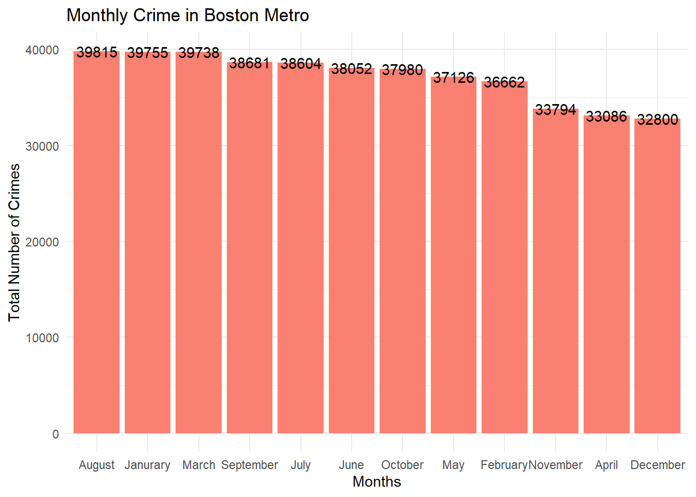
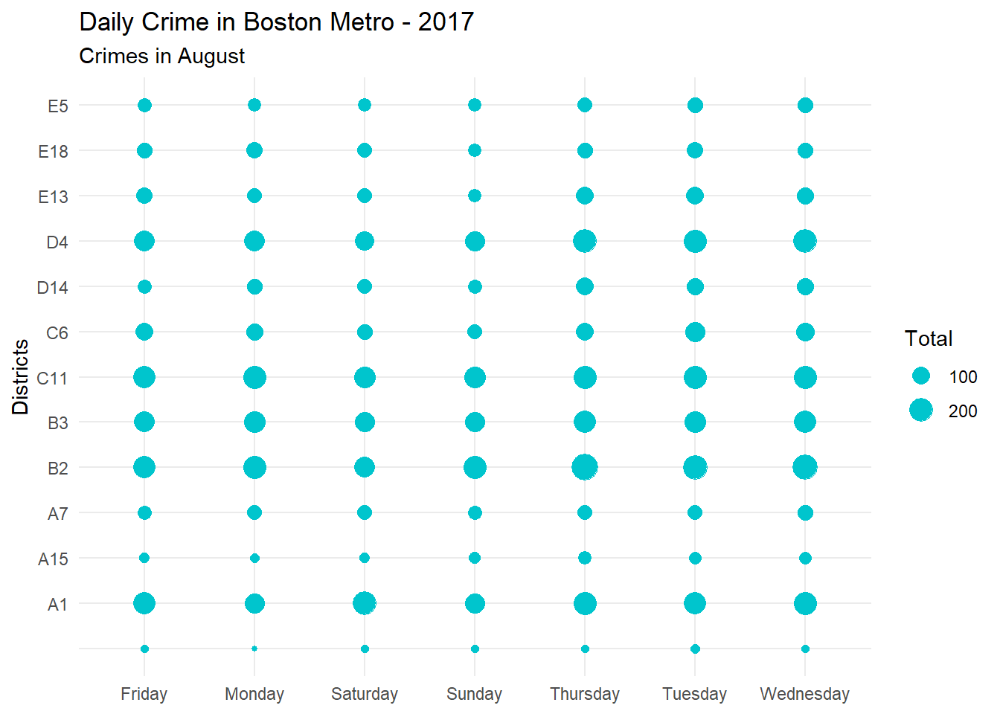
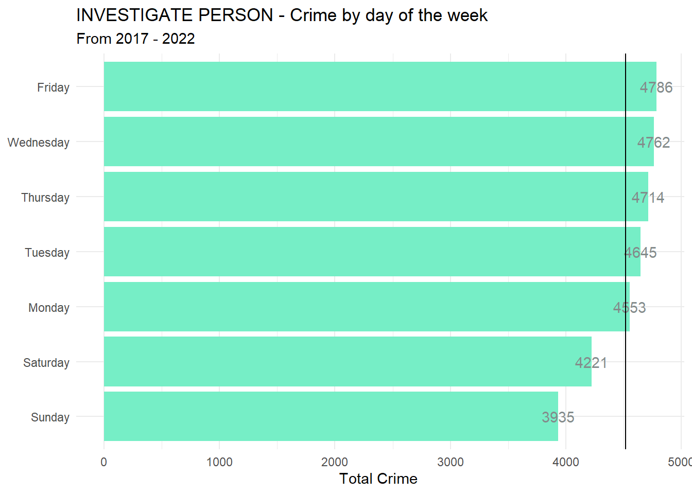
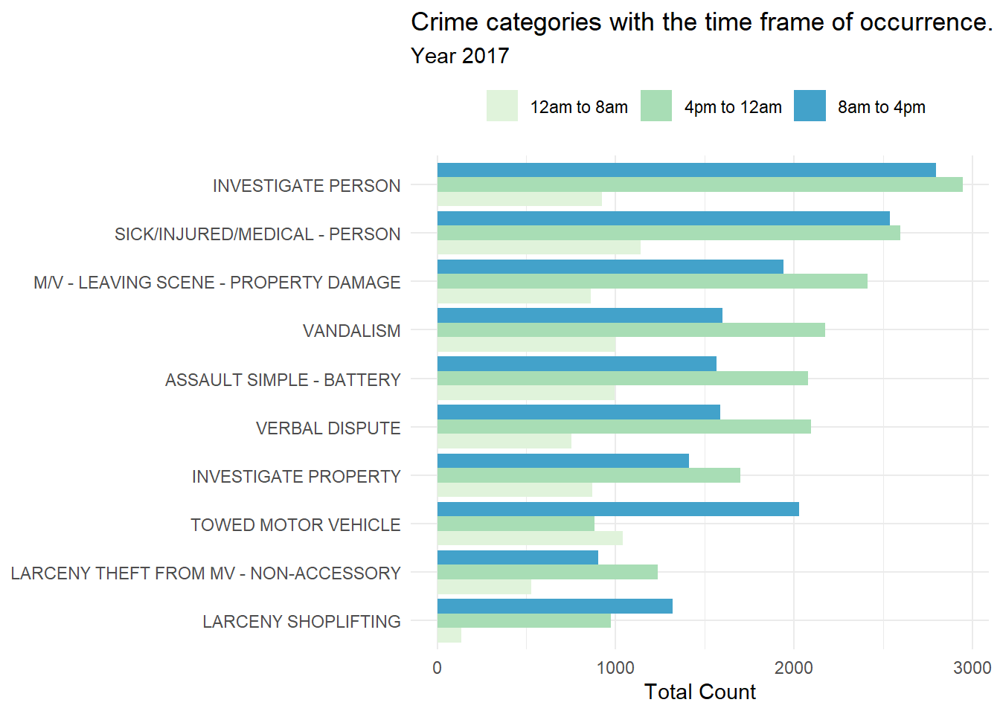
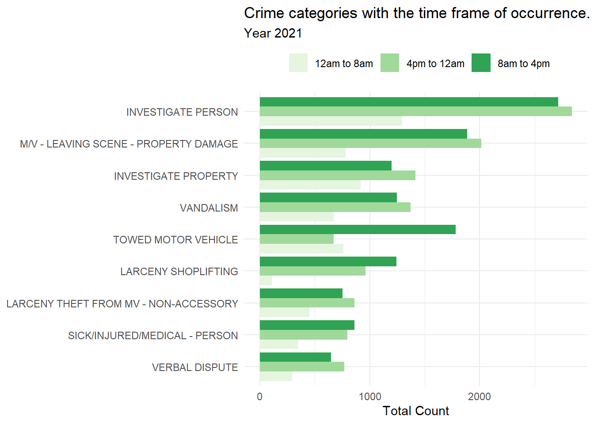
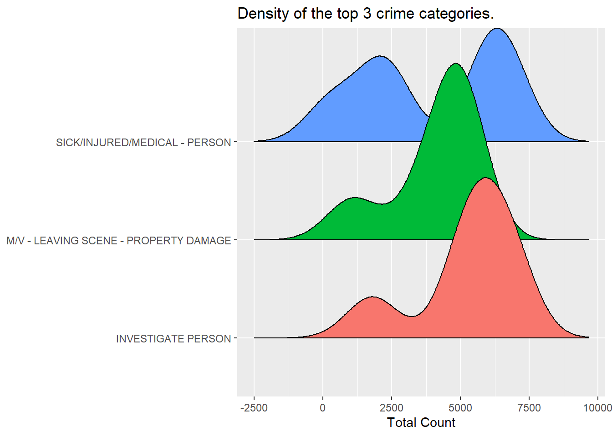

Warning: package 'summarytools' was built under R version 4.2.2
Attaching package: 'summarytools'
The following object is masked from 'package:tibble':
view
library(leaflet)library(gganimate)
Warning: package 'gganimate' was built under R version 4.2.2
library(gapminder)
Warning: package 'gapminder' was built under R version 4.2.2
library(ggplotify)
Error in library(ggplotify): there is no package called 'ggplotify'
library(ggridges)library(hrbrthemes)
NOTE: Either Arial Narrow or Roboto Condensed fonts are required to use these themes.
Please use hrbrthemes::import_roboto_condensed() to install Roboto Condensed and
if Arial Narrow is not on your system, please see https://bit.ly/arialnarrow
Living and studying in Amherst, Massachusetts and the Boston Metro being the closest I always wondered how safe it was to explore the place. Boston Metro is in the 69th percentile in terms of safety which means that 31% of the metro areas are safer and the 69% of the metro areas are very dangerous. The crime rate in Boston is about 19.92 per every 1000 residents during a typical year and majority of the residents and locals believe that Southwest part of the Boston metro to be very safe. Therefore, the chance of you being the victim in the central neighborhoods is as high as 1 in 32 and in the southwest part of the Boston Metro it is as low as 1 in 92. As per the researchers the abandoned buildings, areas filled with graffiti, panhandling and all of the various signs which make it look suspicious in the neighborhoods generally tend to create an environment leading to more crimes. Therefore, I wanted to perform an in-depth analysis on the crime data of Boston Metro and visualize my observations.. All of the data used for this analysis applies to the actual Boston Metro boundaries only and the data ranges from 2017 to 2022(Till March).
I want to understand and analyze on the following and more:
If there is any kind of a relationship between the crimes and the region that they actually take place
What has changed in the criminal activities in the past few years?
What is the crime rate on a daily basis in each of the districts in Boston?
Dataset Description
I have collected the Boston Crime dataset from Kaggle from the year 2017 to 2022(till March). The dataset consists of 4,46,093 rows/records and 18 different columns/categories to help analyze the data. Let us now understand what each category of the dataset tells us.
Column Names along with their descriptions
S.No - Gives the serial number of the crime record.
Incident Number - Gives the internal BPD report number for each of the incidents and it cannot be NULL.
Offense Code - Gives the numerical code value of the offense description.
Offense Code Group - Gives the high level offense code group name.
Offense Description - Gives the detailed description of the offense and the internal categorization of the offense.
District - Gives the district where the crime has taken place.
Reporting Area - Gives the number of the reporting area where the crime has taken place.
Shooting - Gives the numerical value of any kinds of shootings that have taken place.
Occurred on Date - Gives the date and time of when the crime has taken place.
Year - Gives the year when the crime has taken place.
Month - Gives the month when the crime has taken place.
Day of Week - Gives the day of the week when the crime has taken place.
Hour - Gives the hour when the crime has taken place.
UCR part - Gives the Universal Crime Reporting Part Number.
Street - Gives the Street name of where the crime has taken place.
Lat - Gives the latitude of where the crime has taken place.
Long - Gives the longitude of where the crime has taken place.
Location - Gives the location of where the crime has taken place.
Read Data
Now, let us read our dataset into our dataframe.
#Read the databoston_crime <-read.csv("_data/Boston_crime_2017_2022.csv")head(boston_crime)
X INCIDENT_NUMBER OFFENSE_CODE OFFENSE_CODE_GROUP
1 0 225520077 3126
2 1 222648862 3831
3 2 222201764 724
4 3 222201559 301
5 4 222111641 619
6 5 222107076 3126
OFFENSE_DESCRIPTION DISTRICT REPORTING_AREA SHOOTING
1 WARRANT ARREST - OUTSIDE OF BOSTON WARRANT D14 786 0
2 M/V - LEAVING SCENE - PROPERTY DAMAGE B2 288 0
3 AUTO THEFT C6 200 0
4 ROBBERY D4 NA 0
5 LARCENY ALL OTHERS D14 778 0
6 WARRANT ARREST - OUTSIDE OF BOSTON WARRANT D4 NA 0
OCCURRED_ON_DATE YEAR MONTH DAY_OF_WEEK HOUR UCR_PART
1 2022-02-02 00:00:00 2022 2 Wednesday 0
2 2022-02-05 18:25:00 2022 2 Saturday 18
3 2022-01-09 00:00:00 2022 1 Sunday 0
4 2022-03-05 13:00:00 2022 3 Saturday 13
5 2022-02-14 12:30:00 2022 2 Monday 12
6 2022-03-11 10:45:00 2022 3 Friday 10
STREET Lat Long
1 WASHINGTON ST 42.34308 -71.14172
2 WASHINGTON ST 42.32975 -71.08454
3 W BROADWAY 42.34129 -71.05468
4 ALBANY ST 42.33318 -71.07394
5 WASHINGTON ST 42.34906 -71.15050
6 MASSACHUSETTS AVE & ALBANY ST\nBOSTON MA 02118\nUNI 42.33350 -71.07351
Location
1 (42.34308127134165, -71.14172267328729)
2 (42.329748204791635, -71.08454011649543)
3 (42.341287504390436, -71.05467932649397)
4 (42.333184490911954, -71.07393881002383)
5 (42.34905600030506, -71.15049849975023)
6 (42.33349998017161, -71.07350999617319)
X INCIDENT_NUMBER OFFENSE_CODE OFFENSE_CODE_GROUP
Min. : 0 Length:446093 Min. : 100 Length:446093
1st Qu.: 19091 Class :character 1st Qu.: 1102 Class :character
Median : 41395 Mode :character Median : 3006 Mode :character
Mean : 42678 Mean : 2358
3rd Qu.: 63700 3rd Qu.: 3201
Max. :101337 Max. :99999
OFFENSE_DESCRIPTION DISTRICT REPORTING_AREA SHOOTING
Length:446093 Length:446093 Min. : 0.0 Length:446093
Class :character Class :character 1st Qu.:177.0 Class :character
Mode :character Mode :character Median :348.0 Mode :character
Mean :382.8
3rd Qu.:540.0
Max. :962.0
NA's :58372
OCCURRED_ON_DATE YEAR MONTH DAY_OF_WEEK
Length:446093 Min. :2017 Min. : 1.000 Length:446093
Class :character 1st Qu.:2018 1st Qu.: 3.000 Class :character
Mode :character Median :2019 Median : 6.000 Mode :character
Mean :2019 Mean : 6.413
3rd Qu.:2020 3rd Qu.: 9.000
Max. :2022 Max. :12.000
HOUR UCR_PART STREET Lat
Min. : 0.00 Length:446093 Length:446093 Min. :-1.00
1st Qu.: 9.00 Class :character Class :character 1st Qu.:42.28
Median :14.00 Mode :character Mode :character Median :42.31
Mean :12.98 Mean :35.27
3rd Qu.:18.00 3rd Qu.:42.34
Max. :23.00 Max. :42.40
NA's :13458
Long Location
Min. :-71.18 Length:446093
1st Qu.:-71.09 Class :character
Median :-71.07 Mode :character
Mean :-59.24
3rd Qu.:-71.05
Max. : 0.00
NA's :13458
Tidy Data
Let us now check if there are any NA values in the dataset.
na_values <-colSums(is.na(boston_crime))na_values
X INCIDENT_NUMBER OFFENSE_CODE OFFENSE_CODE_GROUP
0 0 0 0
OFFENSE_DESCRIPTION DISTRICT REPORTING_AREA SHOOTING
0 0 58372 0
OCCURRED_ON_DATE YEAR MONTH DAY_OF_WEEK
0 0 0 0
HOUR UCR_PART STREET Lat
0 0 0 13458
Long Location
13458 0
Now we use str() which is used for compactly displaying the internal structure of a R object.
We can now get all of the classes/data type of all of the columns in the dataset.
sapply(boston_crime, class)
X INCIDENT_NUMBER OFFENSE_CODE OFFENSE_CODE_GROUP
"integer" "character" "integer" "character"
OFFENSE_DESCRIPTION DISTRICT REPORTING_AREA SHOOTING
"character" "character" "integer" "character"
OCCURRED_ON_DATE YEAR MONTH DAY_OF_WEEK
"character" "integer" "integer" "character"
HOUR UCR_PART STREET Lat
"integer" "character" "character" "numeric"
Long Location
"numeric" "character"
We now observe that the MONTH column is an integer and the values are in integer values of the different months. Let us first convert the MONTH column from integer to character.
X INCIDENT_NUMBER OFFENSE_CODE OFFENSE_CODE_GROUP
"integer" "character" "integer" "character"
OFFENSE_DESCRIPTION DISTRICT REPORTING_AREA SHOOTING
"character" "character" "integer" "character"
OCCURRED_ON_DATE YEAR MONTH DAY_OF_WEEK
"character" "integer" "character" "character"
HOUR UCR_PART STREET Lat
"integer" "character" "character" "numeric"
Long Location
"numeric" "character"
We can now observe that the class/data type of the column MONTH has been changed to character. Now let us replace all of the numeric values in the MONTHS to their corresponding character months.
X INCIDENT_NUMBER OFFENSE_CODE OFFENSE_CODE_GROUP
1 0 225520077 3126
2 1 222648862 3831
3 2 222201764 724
4 3 222201559 301
5 4 222111641 619
6 5 222107076 3126
OFFENSE_DESCRIPTION DISTRICT REPORTING_AREA SHOOTING
1 WARRANT ARREST - OUTSIDE OF BOSTON WARRANT D14 786 0
2 M/V - LEAVING SCENE - PROPERTY DAMAGE B2 288 0
3 AUTO THEFT C6 200 0
4 ROBBERY D4 NA 0
5 LARCENY ALL OTHERS D14 778 0
6 WARRANT ARREST - OUTSIDE OF BOSTON WARRANT D4 NA 0
OCCURRED_ON_DATE YEAR MONTH DAY_OF_WEEK HOUR UCR_PART
1 2022-02-02 00:00:00 2022 February Wednesday 0
2 2022-02-05 18:25:00 2022 February Saturday 18
3 2022-01-09 00:00:00 2022 Janurary Sunday 0
4 2022-03-05 13:00:00 2022 March Saturday 13
5 2022-02-14 12:30:00 2022 February Monday 12
6 2022-03-11 10:45:00 2022 March Friday 10
STREET Lat Long
1 WASHINGTON ST 42.34308 -71.14172
2 WASHINGTON ST 42.32975 -71.08454
3 W BROADWAY 42.34129 -71.05468
4 ALBANY ST 42.33318 -71.07394
5 WASHINGTON ST 42.34906 -71.15050
6 MASSACHUSETTS AVE & ALBANY ST\nBOSTON MA 02118\nUNI 42.33350 -71.07351
Location
1 (42.34308127134165, -71.14172267328729)
2 (42.329748204791635, -71.08454011649543)
3 (42.341287504390436, -71.05467932649397)
4 (42.333184490911954, -71.07393881002383)
5 (42.34905600030506, -71.15049849975023)
6 (42.33349998017161, -71.07350999617319)
head(boston_crime)
X INCIDENT_NUMBER OFFENSE_CODE OFFENSE_CODE_GROUP
1 0 225520077 3126
2 1 222648862 3831
3 2 222201764 724
4 3 222201559 301
5 4 222111641 619
6 5 222107076 3126
OFFENSE_DESCRIPTION DISTRICT REPORTING_AREA SHOOTING
1 WARRANT ARREST - OUTSIDE OF BOSTON WARRANT D14 786 0
2 M/V - LEAVING SCENE - PROPERTY DAMAGE B2 288 0
3 AUTO THEFT C6 200 0
4 ROBBERY D4 NA 0
5 LARCENY ALL OTHERS D14 778 0
6 WARRANT ARREST - OUTSIDE OF BOSTON WARRANT D4 NA 0
OCCURRED_ON_DATE YEAR MONTH DAY_OF_WEEK HOUR UCR_PART
1 2022-02-02 00:00:00 2022 February Wednesday 0
2 2022-02-05 18:25:00 2022 February Saturday 18
3 2022-01-09 00:00:00 2022 Janurary Sunday 0
4 2022-03-05 13:00:00 2022 March Saturday 13
5 2022-02-14 12:30:00 2022 February Monday 12
6 2022-03-11 10:45:00 2022 March Friday 10
STREET Lat Long
1 WASHINGTON ST 42.34308 -71.14172
2 WASHINGTON ST 42.32975 -71.08454
3 W BROADWAY 42.34129 -71.05468
4 ALBANY ST 42.33318 -71.07394
5 WASHINGTON ST 42.34906 -71.15050
6 MASSACHUSETTS AVE & ALBANY ST\nBOSTON MA 02118\nUNI 42.33350 -71.07351
Location
1 (42.34308127134165, -71.14172267328729)
2 (42.329748204791635, -71.08454011649543)
3 (42.341287504390436, -71.05467932649397)
4 (42.333184490911954, -71.07393881002383)
5 (42.34905600030506, -71.15049849975023)
6 (42.33349998017161, -71.07350999617319)
We can observe that the values of the column MONTH have been changed successfuly. Let us now perform our analysis.
Research Questions
Once I am done with cleaning and observing the data, now I want to perform my analysis/visualization to answer my research questions. My major focus is to understand the relation between the crime and the region, time of the day and the crime and various other interesting observations.
Let us now look at each one of them in detail along with my observation.
1. What are the different crime categories in Boston and what are the most common crimes among them from 2017-2022?
First, let us find out what are all the various crime categories and how many records we have for each one of these crime categories in their decreasing order..
Offense_code_group
106 INVESTIGATE PERSON
131 M/V - LEAVING SCENE - PROPERTY DAMAGE
223 SICK/INJURED/MEDICAL - PERSON
239 VANDALISM
107 INVESTIGATE PROPERTY
230 TOWED MOTOR VEHICLE
240 VERBAL DISPUTE
16 ASSAULT SIMPLE - BATTERY
123 LARCENY THEFT FROM MV - NON-ACCESSORY
120 LARCENY SHOPLIFTING
229 THREATS TO DO BODILY HARM
221 SICK ASSIST
121 LARCENY THEFT FROM BUILDING
115 LARCENY ALL OTHERS
194 PROPERTY - LOST
13 ASSAULT - SIMPLE
90 FRAUD - FALSE PRETENSE / SCHEME
11 ASSAULT - AGGRAVATED
139 M/V ACCIDENT - PERSONAL INJURY
174 MISSING PERSON - LOCATED
249 WARRANT ARREST
137 M/V ACCIDENT - OTHER
141 M/V ACCIDENT - PROPERTY DAMAGE
193 PROPERTY - FOUND
196 PROPERTY - LOST/ MISSING
17 AUTO THEFT
142 M/V ACCIDENT - PROPERTY DAMAGE
12 ASSAULT - AGGRAVATED - BATTERY
98 HARASSMENT
69 DRUGS - POSSESSION/ SALE/ MANUFACTURING/ USE
124 LARCENY THEFT OF BICYCLE
89 FRAUD - CREDIT CARD / ATM FRAUD
231 TRESPASSING
173 MISSING PERSON
233 VAL - OPERATING AFTER REV/SUSP.
99 HARASSMENT/ CRIMINAL HARASSMENT
91 FRAUD - IMPERSONATION
237 VAL - VIOLATION OF AUTO LAW
125 LARCENY THEFT OF MV PARTS & ACCESSORIES
224 SICK/INJURED/MEDICAL - POLICE
227 SUDDEN DEATH
126 LICENSE PREMISE VIOLATION
219 SERVICE TO OTHER PD INSIDE OF MA.
32 BURGLARY - RESIDENTIAL
214 ROBBERY - STREET
58 DRUGS - POSS CLASS B - COCAINE, ETC.
46 DEATH INVESTIGATION
59 DRUGS - POSS CLASS B - INTENT TO MFR DIST DISP
208 ROBBERY
222 SICK ASSIST - DRUG RELATED ILLNESS
238 VAL - VIOLATION OF AUTO LAW - OTHER
130 M/V - LEAVING SCENE - PERSONAL INJURY
34 BURGLARY - RESIDENTIAL - FORCE
88 FORGERY / COUNTERFEITING
35 BURGLARY - RESIDENTIAL - NO FORCE
20 BALLISTICS EVIDENCE/FOUND
205 RECOVERED - MV RECOVERED IN BOSTON (STOLEN OUTSIDE BOSTON)
191 PROPERTY - ACCIDENTAL DAMAGE
236 VAL - OPERATING WITHOUT LICENSE
70 DRUGS - SALE / MANUFACTURING
143 M/V ACCIDENT INVOLVING PEDESTRIAN - INJURY
19 AUTO THEFT - MOTORCYCLE / SCOOTER
140 M/V ACCIDENT - POLICE VEHICLE
56 DRUGS - POSS CLASS A - HEROIN, ETC.
138 M/V ACCIDENT - OTHER CITY VEHICLE
92 FRAUD - WELFARE
217 SEARCH WARRANT
81 FIRE REPORT
57 DRUGS - POSS CLASS A - INTENT TO MFR DIST DISP
135 M/V ACCIDENT - INVOLVING PEDESTRIAN - INJURY
226 STOLEN PROPERTY - BUYING / RECEIVING / POSSESSING
25 BURGLARY - COMMERICAL
83 FIRE REPORT - HOUSE, BUILDING, ETC.
48 DISORDERLY CONDUCT
175 MISSING PERSON - NOT REPORTED - LOCATED
127 LIQUOR - DRINKING IN PUBLIC
71 DRUGS - SICK ASSIST - HEROIN
86 FIREARM/WEAPON - FOUND OR CONFISCATED
251 WARRANT ARREST - OUTSIDE OF BOSTON WARRANT
197 PROPERTY - MISSING
114 LANDLORD - TENANT SERVICE
144 M/V PLATES - LOST
242 VIOL. OF RESTRAINING ORDER W NO ARREST
113 LANDLORD - TENANT
234 VAL - OPERATING UNREG/UNINS CAR
252 WEAPON - FIREARM - CARRYING / POSSESSING, ETC
257 WEAPON VIOLATION - CARRY/ POSSESSING/ SALE/ TRAFFICKING/ OTHER
64 DRUGS - POSS CLASS D - INTENT TO MFR DIST DISP
93 FRAUD - WIRE
55 DRUGS - OTHER
132 M/V ACCIDENT - INVOLVING BICYCLE - INJURY
218 SERVICE TO OTHER AGENCY
27 BURGLARY - COMMERICAL - FORCE
136 M/V ACCIDENT - INVOLVING PEDESTRIAN - NO INJURY
18 AUTO THEFT - LEASED/RENTED VEHICLE
179 NOISY PARTY/RADIO-NO ARREST
235 VAL - OPERATING W/O AUTHORIZATION LAWFUL
49 DISTURBING THE PEACE
186 OTHER OFFENSE
134 M/V ACCIDENT - INVOLVING BICYCLE - NO INJURY
33 BURGLARY - RESIDENTIAL - ATTEMPT
97 GRAFFITI
211 ROBBERY - COMMERCIAL
255 WEAPON - OTHER - CARRYING / POSSESSING, ETC
213 ROBBERY - OTHER
243 VIOLATION - CITY ORDINANCE
117 LARCENY PICK-POCKET
76 EVADING FARE
50 DISTURBING THE PEACE/ DISORDERLY CONDUCT/ GATHERING CAUSING ANNOYANCE/ NOISY PAR
198 PROPERTY - STOLEN THEN RECOVERED
133 M/V ACCIDENT - INVOLVING BICYCLE - INJURY
82 FIRE REPORT - CAR, BRUSH, ETC.
45 DANGEROUS OR HAZARDOUS CONDITION
80 EXTORTION OR BLACKMAIL
228 SUICIDE / SUICIDE ATTEMPT
75 EMBEZZLEMENT
100 HARBOR INCIDENT / VIOLATION
184 OPERATING UNDER THE INFLUENCE ALCOHOL
8 ANIMAL INCIDENTS (DOG BITES, LOST DOG, ETC)
60 DRUGS - POSS CLASS C
65 DRUGS - POSS CLASS E
195 PROPERTY - LOST THEN LOCATED
62 DRUGS - POSS CLASS D
6 ANIMAL CONTROL - DOG BITES - ETC.
129 LIQUOR/ALCOHOL - DRINKING IN PUBLIC
94 FUGITIVE FROM JUSTICE
105 INTIMIDATING WITNESS
250 WARRANT ARREST - BOSTON WARRANT (MUST BE SUPPLEMENTAL)
177 MURDER, NON-NEGLIGIENT MANSLAUGHTER
7 ANIMAL INCIDENTS
182 OPERATING UNDER THE INFLUENCE (OUI) ALCOHOL
3 AFFRAY
28 BURGLARY - COMMERICAL - NO FORCE
84 FIRE REPORT/ALARM - FALSE
52 DRUGS - CLASS B TRAFFICKING OVER 18 GRAMS
248 VIOLATION - RESTRAINING ORDER (NO ARREST)
61 DRUGS - POSS CLASS C - INTENT TO MFR DIST DISP
73 DRUGS - SICK ASSIST - OTHER NARCOTIC
241 VIOL. OF RESTRAINING ORDER W ARREST
47 DEMONSTRATIONS/RIOT
108 INVESTIGATION FOR ANOTHER AGENCY
220 SERVICE TO OTHER PD OUTSIDE OF MA.
30 BURGLARY - OTHER - FORCE
128 LIQUOR LAW VIOLATION
51 DRUGS - CLASS A TRAFFICKING OVER 18 GRAMS
187 POSSESSION OF BURGLARIOUS TOOLS
202 PROSTITUTION - SOLICITING
37 CHILD ENDANGERMENT
72 DRUGS - SICK ASSIST - OTHER HARMFUL DRUG
253 WEAPON - FIREARM - OTHER VIOLATION
207 REPORT AFFECTING OTHER DEPTS.
23 BREAKING AND ENTERING (B&E) MOTOR VEHICLE
10 ARSON
119 LARCENY PURSE SNATCH - NO FORCE
31 BURGLARY - OTHER - NO FORCE
66 DRUGS - POSS CLASS E - INTENT TO MFR DIST DISP
209 ROBBERY - BANK
4 AIRCRAFT INCIDENTS
68 DRUGS - POSSESSION OF DRUG PARAPHANALIA
38 CHILD ENDANGERMENT (NO ASSAULT)
22 BOMB THREAT
256 WEAPON - OTHER - OTHER VIOLATION
5 ANIMAL ABUSE
245 VIOLATION - HARASSMENT PREVENTION ORDER
204 RECOVERED - MV RECOVERED IN BOSTON (STOLEN IN BOSTON) MUST BE SUPPLEMENTAL
43 CRIMINAL HARASSMENT
180 OBSCENE MATERIALS - PORNOGRAPHY
26 BURGLARY - COMMERICAL - ATTEMPT
24 BREAKING AND ENTERING (B&E) MOTOR VEHICLE (NO PROPERTY STOLEN)
104 INJURY BICYCLE NO M/V INVOLVED
210 ROBBERY - CAR JACKING
166 Migrated Report - Other Larceny
212 ROBBERY - HOME INVASION
168 Migrated Report - Other Part III
54 DRUGS - CONSP TO VIOL CONTROLLED SUBSTANCE
67 DRUGS - POSSESSION
206 RECOVERED STOLEN PLATE
9 ANNOYING AND ACCOSTING
185 OPERATING UNDER THE INFLUENCE DRUGS
101 HOME INVASION
149 Migrated Report - Aggravated Assault/Aggravated Assault & Battery
157 Migrated Report - Drugs - Possession/Manufacturing/Distribute
118 LARCENY PURSE SNATCH - NO FORCE
110 KIDNAPPING - ENTICING OR ATTEMPTED
111 KIDNAPPING/CUSTODIAL KIDNAPPING
150 Migrated Report - Assault/Assault & Battery
192 PROPERTY - CONCEALING LEASED
181 OBSCENE PHONE CALLS
225 STALKING
78 EXPLOSIVES - POSSESSION OR USE
188 PRISONER - SUICIDE / SUICIDE ATTEMPT
79 EXPLOSIVES - TURNED IN OR FOUND
167 Migrated Report - Other Part II
203 PROTECTIVE CUSTODY / SAFEKEEPING
199 PROSTITUTION
29 BURGLARY - OTHER - ATTEMPT
183 OPERATING UNDER THE INFLUENCE (OUI) DRUGS
153 Migrated Report - Burglary/Breaking and Entering
36 CHILD ABANDONMENT (NO ASSAULT)
232 TRUANCY / RUNAWAY
112 KIDNAPPING/CUSTODIAL KIDNAPPING/ ABDUCTION
40 CHINS
39 CHILD REQUIRING ASSISTANCE (FOMERLY CHINS)
165 Migrated Report - Motor Vehicle Crash
246 VIOLATION - HAWKER AND PEDDLER
41 CONSPIRACY EXCEPT DRUG LAW
156 Migrated Report - Death Investigation
171 Migrated Report - Vandalism/Destruction of Property
87 FIREARM/WEAPON - LOST
122 LARCENY THEFT FROM COIN-OP MACHINE
178 NOISY PARTY/RADIO-ARREST
244 VIOLATION - CITY ORDINANCE CONSTRUCTION PERMIT
74 DRUNKENNESS
53 DRUGS - CLASS D TRAFFICKING OVER 50 GRAMS
159 Migrated Report - Fraud
162 Migrated Report - Investigate Property
169 Migrated Report - Robbery
161 Migrated Report - Investigate Person
172 Migrated Report - Weapons Violation
152 Migrated Report - Auto Theft
254 WEAPON - FIREARM - SALE / TRAFFICKING
96 GATHERING CAUSING ANNOYANCE
151 Migrated Report - Auto Law Violation
164 Migrated Report - Larceny From MV
201 PROSTITUTION - COMMON NIGHTWALKER
42 CONTRIBUTING TO DELINQUENCY OF MINOR
95 GAMBLING - BETTING / WAGERING
102 HUMAN TRAFFICKING - COMMERCIAL SEX ACTS
147 MANSLAUGHTER - VEHICLE - NEGLIGENCE
85 FIREARM/WEAPON - ACCIDENTAL INJURY / DEATH
155 Migrated Report - Criminal Homicide
215 ROBBERY - UNARMED - CHAIN STORE
2 ABDUCTION - INTICING
44 CUSTODIAL KIDNAPPING
154 Migrated Report - Counterfeiting/Forgery
190 PRISONER ESCAPE / ESCAPE & RECAPTURE
200 PROSTITUTION - ASSISTING OR PROMOTING
21 BIOLOGICAL THREATS
116 LARCENY IN A BUILDING UNDER $50
170 Migrated Report - Stolen Property
176 MURDER, NON-NEGLIGENT MANSLAUGHTER
1 A&B ON POLICE OFFICER
14 ASSAULT & BATTERY
63 DRUGS - POSS CLASS D - INTENT MFR DIST DISP
109 Justifiable Homicide
148 Migrated Report - Affray/Disturbing the Peace/Disorderly Conduct
216 ROBBERY - UNARMED - STREET
15 ASSAULT & BATTERY D/W - OTHER ON POLICE OFFICER
77 Evidence Tracker Incidents
103 HUMAN TRAFFICKING - INVOLUNTARY SERVITUDE
145 MANSLAUGHTER - NEGLIGENCE
146 MANSLAUGHTER - NON-VEHICLE - NEGLIGENCE
158 Migrated Report - Embezzlement
160 Migrated Report - Injured/Medical/Sick Assist
163 Migrated Report - Kidnapping
189 PRISONER ATTEMPT TO RESCUE
247 VIOLATION - RESTRAINING ORDER
Total
106 31616
131 24504
223 23739
239 19790
107 18890
230 17325
240 16023
16 13382
123 12522
120 12460
229 11854
221 11497
121 11482
115 8855
194 8099
13 7853
90 7147
11 6648
139 6506
174 6410
249 6089
137 5942
141 5697
193 5429
196 5063
17 5044
142 4824
12 4197
98 3977
69 3845
124 3773
89 3441
231 3383
173 3200
233 2959
99 2811
91 2748
237 2706
125 2627
224 2626
227 2508
126 2242
219 2165
32 2155
214 2141
58 2047
46 1973
59 1968
208 1889
222 1834
238 1831
130 1802
34 1684
88 1631
35 1569
20 1445
205 1435
191 1378
236 1377
70 1366
143 1268
19 1252
140 1216
56 1193
138 1137
92 1128
217 1103
81 1070
57 1051
135 1041
226 1034
25 1033
83 1030
48 982
175 920
127 906
71 886
86 876
251 863
197 859
114 837
144 834
242 825
113 821
234 768
252 759
257 723
64 718
93 707
55 698
132 694
218 690
27 662
136 604
18 591
179 555
235 547
49 496
186 485
134 467
33 466
97 463
211 454
255 448
213 438
243 437
117 433
76 416
50 415
198 413
133 409
82 408
45 405
80 391
228 387
75 360
100 354
184 353
8 347
60 339
65 336
195 334
62 311
6 306
129 274
94 270
105 264
250 251
177 247
7 241
182 237
3 235
28 230
84 211
52 207
248 205
61 198
73 196
241 196
47 186
108 181
220 180
30 172
128 157
51 152
187 149
202 148
37 146
72 145
253 138
207 135
23 133
10 127
119 124
31 122
66 114
209 105
4 102
68 101
38 99
22 97
256 92
5 90
245 82
204 81
43 80
180 78
26 76
24 71
104 70
210 69
166 63
212 61
168 60
54 59
67 59
206 57
9 56
185 56
101 53
149 52
157 52
118 48
110 39
111 39
150 39
192 38
181 37
225 37
78 34
188 34
79 31
167 31
203 31
199 30
29 29
183 29
153 26
36 24
232 24
112 23
40 21
39 19
165 19
246 18
41 17
156 17
171 16
87 15
122 15
178 15
244 15
74 12
53 11
159 11
162 11
169 11
161 10
172 10
152 9
254 9
96 8
151 7
164 7
201 7
42 6
95 6
102 6
147 6
85 5
155 5
215 5
2 4
44 4
154 4
190 4
200 4
21 3
116 3
170 3
176 3
1 2
14 2
63 2
109 2
148 2
216 2
15 1
77 1
103 1
145 1
146 1
158 1
160 1
163 1
189 1
247 1
We can see that there are 257 different crime categories in the Boston metro region. I have also observed that there are few categories of crime which are extremely minimal and which are quite rare in the few years which are not our main focus. We need to mainly focus on the crime categories which are very high in number and are contributing to the crime rate in the Boston metro. To identify these crime categories we now select the top 10 crime categories from the decreasing order.
Offense_code_group Total
106 INVESTIGATE PERSON 31616
131 M/V - LEAVING SCENE - PROPERTY DAMAGE 24504
223 SICK/INJURED/MEDICAL - PERSON 23739
239 VANDALISM 19790
107 INVESTIGATE PROPERTY 18890
230 TOWED MOTOR VEHICLE 17325
240 VERBAL DISPUTE 16023
16 ASSAULT SIMPLE - BATTERY 13382
123 LARCENY THEFT FROM MV - NON-ACCESSORY 12522
120 LARCENY SHOPLIFTING 12460
We now plot a bar graph to represent the crime categories and the number of the crimes from 2017- 2022.
ggplot(data = top_crime_data, mapping =aes(x= Total, y=reorder(Offense_code_group, Total)))+geom_col(aes(fill = Offense_code_group))+geom_text(data = top_crime_data[c(1,39),],mapping =aes(label = Total))+theme_minimal()+labs(title ="Common Crime Category in Boston Metro",y ="Crime categories",x ="Total number of crimes") +theme(legend.position ="none")
Interpretation
I have chosen a bar graph as it conveys the relational information more easily and quickly. Each of the bars display the value of the particular crime category. I have used geom_col() instead of geom_bar() because I want the height of the bars to represent/show the values. From the graph it is very clear that “INVESTIGATE PERSON” is the most common crime category which is then followed by the “M/V - LEAVING SCENE - PROPERTY DAMAGE” then “SICK/INJURED/MEDICAL -PERSON” and so on.
2. Which year has contributed for the maximum number of crimes in the Boston Metro and did the crimes increase of decrease from 2017-2022
Let us check if the class/data_type of the column YEAR to check if it is a numeric value or not if it isn’t then let’s transform the YEAR to a numeric value.
sapply(boston_crime, class)
X INCIDENT_NUMBER OFFENSE_CODE OFFENSE_CODE_GROUP
"integer" "character" "integer" "character"
OFFENSE_DESCRIPTION DISTRICT REPORTING_AREA SHOOTING
"character" "character" "integer" "character"
OCCURRED_ON_DATE YEAR MONTH DAY_OF_WEEK
"character" "integer" "character" "character"
HOUR UCR_PART STREET Lat
"integer" "character" "character" "numeric"
Long Location
"numeric" "character"
We can see that the column YEAR is a numeric value and there is no need for us to transform.
Now, let us get the count of the crime records for each year from 2017 to 2022.
# A tibble: 6 × 2
YEAR Total
<int> <int>
1 2017 101338
2 2018 98888
3 2019 87184
4 2020 70894
5 2021 71721
6 2022 16068
We now plot a line graph to represent the different years and the number of the crimes in each of the years from 2017- 2022(Till March).
ggplot(crimes_per_year, aes(x = YEAR, y = Total))+geom_line(color ="grey")+geom_point(size =3, color ="red")+theme_minimal()+labs(title ="Crimes per Year in Boston Metro",x ="Years",y ="Total number of crimes")
Interpretation
I have chosen a line graph as it helps in tracking the changes that have taken place over a short of a long period of time. It also helps us in making observations if they are consistently increasing or decreasing. From the graph we can observe that it is a downward slope which is an extremely positive sign as it indicates that the crimes per year have decreased over time. From 2017-2018 there is a slight decrease in the crimes where there is a significant decrease in the number of crimes from 2018-2020 . We can also observe that from 2020-2021 the number of crimes have very slightly increased. We can ignore the downward slope to 2022 because our dataset consists of the crime records for only the first 3 months of 2022 thereby, not providing the accurate analysis for 2022. We can conclude that 2017 has the maximum number of crimes.
3. Which months of the year have seen the highest number of crimes? Is it during the holiday months or not?
Let us now check if there is any difference in the number of crimes that happen based on the months.
# A tibble: 12 × 2
MONTH Total
<chr> <int>
1 April 33086
2 August 39815
3 December 32800
4 February 36662
5 Janurary 39755
6 July 38604
7 June 38052
8 March 39738
9 May 37126
10 November 33794
11 October 37980
12 September 38681
We now plot a bar graph to represent the monthly crimes and the number of the crimes for the 12 months.
ggplot(monthly_crimes, aes(x =reorder(MONTH, -Total), y = Total))+geom_col(fill ="salmon")+geom_text(aes(label = Total), col ="black")+theme_minimal()+labs(title ="Monthly Crime in Boston Metro",y ="Total Number of Crimes",x ="Months")

Interpretation
I have chosen a bar graph as it conveys the relational information more easily and quickly. Each of the bars display the value of the particular crime category. I have used geom_col() instead of geom_bar() because I want the height of the bars to represent/show the values. From this graph we can observe that there is not a very huge difference between the crime rate in different months but we can observe that the crime during the holiday season like December and November have a low crime rate than the other months. We can also observe that the month right after the holiday month January is almost the highest month with the crime rate.
We know that the year with the highest crimes is 2017. Now, let us know the month of 2017 with the highest crime rate.
# A tibble: 12 × 2
MONTH Total
<chr> <int>
1 April 8101
2 August 9251
3 December 7603
4 February 7429
5 Janurary 8024
6 July 9109
7 June 9016
8 March 8194
9 May 8745
10 November 7983
11 October 8899
12 September 8984
We now plot a bar graph to represent the monthly crimes for the year 2017 and the number of the crimes for the 12 months.
ggplot(monthly_crimes_2017, aes(x =reorder(MONTH, -Total), y = Total))+geom_col(fill ="pink")+geom_text(aes(label = Total), col ="black")+theme_minimal()+labs(title ="Monthly Crime in Boston Metro",y ="Total Number of Crimes",x ="Months")
Interpretation
From this graph we can observe the same interpretation as that of the monthly crimes graph for the past 6 years. Now we also understand that the highest crime month of the year 2017 is August which is very closely followed by July, June and so on. Again we can observe that the holiday months December and November are among the bottom 3 months.
4. What is the daily crime rate in the different streets of the Boston Metro?
Let us first filter, group_by and summarize based on the year with the highest number of crimes and then with the month with the highest number of crimes.
We now have the count for the total number of crimes based on the day of the week and the street in which they have taken place.
We now plot a 2-dimensional frequency graph using the geom_count() to represent the crime rate in the different districts of the Boston Metro.
ggplot(daily_crime, aes(x = DAY_OF_WEEK, y = DISTRICT))+geom_count(aes(size = Total), col ="turquoise3")+theme_minimal()+labs(title ="Daily Crime in Boston Metro - 2017",subtitle ="Crimes in August",x=NULL,y ="Districts" )

Interpretation
I have chosen a 2-dimensional frequency graph using the geom_count as it helps in counting a different number of observations at each of the locations and then maps the count in order to point to the area. From the above graph we can understand that maximum intensity of the dots is maximum on the districts of B2, B3, C11 and D4. However, the crime rate is relatively less in the A and E.This graph also represents which day of the week has the highest number of crimes.
Now, let us visualize the data for the second month with the high crime rate.
We now have the count for the total number of crimes based on the day of the week and the street in which they have taken place.
We now plot a 2-dimensional frequency graph using the geom_count() to represent the crime rate in the different districts of the Boston Metro.
ggplot(daily_crime, aes(x = DAY_OF_WEEK, y = DISTRICT))+geom_count(aes(size = Total), col ="turquoise4")+theme_minimal()+labs(title ="Daily Crime in Boston Metro - 2017",subtitle ="Crimes in July",x=NULL,y ="Districts" )
Interpretation
From the above graph we can understand that maximum intensity of the dots is maximum on the districts of B2, C11. However, the crime rate is relatively less in the A and E. When compared with the month of August, we can observe that the districts of B3 and D4 have slightly less crimes in July. However, B2 and C11 districts are ranked as the top crime districts in both the months. We can now conclude that these two districts are the districts with the highest crime rate.
5. Which day of the week, the top crime category have taken place the most? Is it most during the weekends or during the weekdays?
We know that the top crime category of the Boston Metro is the INVESTIGATE PERSON so, let us now check on which days of the week it is the highest.
We have the total number of crimes taken place based on our top category of crime.
We now plot a bar graph to represent the day of the week the of when the crime has happened and the number of the crimes.
ggplot(top_crime, aes(x = Total, y =reorder(DAY_OF_WEEK, Total)))+geom_col(fill ="aquamarine2")+geom_text(aes(label = Total), col="azure4")+geom_vline(xintercept =mean(top_crime$Total))+geom_label(label =paste("Mean ", round(mean(top_crime$Total))),x =mean(top_crime$Total),y =9)+labs(title ="INVESTIGATE PERSON - Crime by day of the week",subtitle ="From 2017 - 2022",x ="Total Crime ",y =NULL )+theme_minimal()

Interpretation
I have chosen a bar graph as it conveys the relational information more easily and quickly. Each of the bars display the value of the particular crime category. I have used geom_col() instead of geom_bar() because I want the height of the bars to represent/show the values. From this graph we can observe that the crime for this category has majorly happened during the weekdays than on the weekends. There is a significant decrease in the count during the weekends. During the weekends people like to spend time with their families and enjoy the weekend. Whereas, on the weekdays/business hours it is much probable to investigate a person.
Now, let us check for the top second crime category and present our analysis. Our second top crime category is “M/V - LEAVING SCENE - PROPERTY DAMAGE”.
We have the total number of crimes taken place based on our top second category of crime.
We now plot a bar graph to represent the day of the week the of when the crime has happened and the number of the crimes.
ggplot(top_crime, aes(x = Total, y =reorder(DAY_OF_WEEK, Total)))+geom_col(fill ="aquamarine4")+geom_text(aes(label = Total), col="black")+geom_vline(xintercept =mean(top_crime$Total))+geom_label(label =paste("Mean ", round(mean(top_crime$Total))),x =mean(top_crime$Total),y =9)+labs(title ="IM/V - LEAVING SCENE - PROPERTY DAMAGE - Crime by day of the week",subtitle ="From 2017 - 2022",x ="Total Crime ",y =NULL )+theme_minimal()
Interpretation
On the contrary from the graph on the top crime we can observe that the crime has taken place the most during the weekends and has significantly decreased during the weekdays. Friday has the maximum number of property damage crime reports logged followed by Saturday and Sunday. It is also very clear that the business working days have seen comparatively less crimes.
6. When did the top 10 crime categories actually take place? Is it during the morning, evening or the night?
Let us first list out our top 10 crime categories.
[1] INVESTIGATE PERSON M/V - LEAVING SCENE - PROPERTY DAMAGE
[3] SICK/INJURED/MEDICAL - PERSON VANDALISM
[5] INVESTIGATE PROPERTY TOWED MOTOR VEHICLE
[7] VERBAL DISPUTE ASSAULT SIMPLE - BATTERY
[9] LARCENY THEFT FROM MV - NON-ACCESSORY LARCENY SHOPLIFTING
10 Levels: ASSAULT SIMPLE - BATTERY INVESTIGATE PERSON ... VERBAL DISPUTE
Now, we have our top 10 crime categories listed. Let us write a fucntion in order to segregate our column hour into the different time zones say “12am to 8am” , “8am to 4pm” and “4pm to 12am”.
pw <-function(x){ if(x <8){ x <-"12am to 8am" }elseif(x >=8& x <16){ x <-"8am to 4pm" }else{ x <-"4pm to 12am" }}
Let us create a new column called the “Hour_category” which reflects the time zone the crime has actually taken place.
X INCIDENT_NUMBER OFFENSE_CODE OFFENSE_CODE_GROUP
1 0 225520077 3126
2 1 222648862 3831
3 2 222201764 724
4 3 222201559 301
5 4 222111641 619
6 5 222107076 3126
OFFENSE_DESCRIPTION DISTRICT REPORTING_AREA SHOOTING
1 WARRANT ARREST - OUTSIDE OF BOSTON WARRANT D14 786 0
2 M/V - LEAVING SCENE - PROPERTY DAMAGE B2 288 0
3 AUTO THEFT C6 200 0
4 ROBBERY D4 NA 0
5 LARCENY ALL OTHERS D14 778 0
6 WARRANT ARREST - OUTSIDE OF BOSTON WARRANT D4 NA 0
OCCURRED_ON_DATE YEAR MONTH DAY_OF_WEEK HOUR UCR_PART
1 2022-02-02 00:00:00 2022 February Wednesday 0
2 2022-02-05 18:25:00 2022 February Saturday 18
3 2022-01-09 00:00:00 2022 Janurary Sunday 0
4 2022-03-05 13:00:00 2022 March Saturday 13
5 2022-02-14 12:30:00 2022 February Monday 12
6 2022-03-11 10:45:00 2022 March Friday 10
STREET Lat Long
1 WASHINGTON ST 42.34308 -71.14172
2 WASHINGTON ST 42.32975 -71.08454
3 W BROADWAY 42.34129 -71.05468
4 ALBANY ST 42.33318 -71.07394
5 WASHINGTON ST 42.34906 -71.15050
6 MASSACHUSETTS AVE & ALBANY ST\nBOSTON MA 02118\nUNI 42.33350 -71.07351
Location Hour_category
1 (42.34308127134165, -71.14172267328729) 12am to 8am
2 (42.329748204791635, -71.08454011649543) 4pm to 12am
3 (42.341287504390436, -71.05467932649397) 12am to 8am
4 (42.333184490911954, -71.07393881002383) 8am to 4pm
5 (42.34905600030506, -71.15049849975023) 8am to 4pm
6 (42.33349998017161, -71.07350999617319) 8am to 4pm
We know that maximum number of crimes have taken place in the year 2017 so let us check at what time these top 10 crime categories have taken place in 2017.
# A tibble: 30 × 3
# Groups: OFFENSE_DESCRIPTION [10]
OFFENSE_DESCRIPTION Hour_category Total
<chr> <fct> <int>
1 ASSAULT SIMPLE - BATTERY 12am to 8am 994
2 ASSAULT SIMPLE - BATTERY 4pm to 12am 2079
3 ASSAULT SIMPLE - BATTERY 8am to 4pm 1566
4 INVESTIGATE PERSON 12am to 8am 926
5 INVESTIGATE PERSON 4pm to 12am 2946
6 INVESTIGATE PERSON 8am to 4pm 2796
7 INVESTIGATE PROPERTY 12am to 8am 869
8 INVESTIGATE PROPERTY 4pm to 12am 1702
9 INVESTIGATE PROPERTY 8am to 4pm 1413
10 LARCENY SHOPLIFTING 12am to 8am 137
# … with 20 more rows
We have the data now based on the crime category, hour category and the total number of crimes that have taken place.
We now plot a bar graph to represent the the time category of when the crime has taken placed for the top 10 crimes.
ggplot(data = crime_when, mapping =aes(x = Total, y =reorder(OFFENSE_DESCRIPTION, Total))) +geom_col(mapping =aes(fill = Hour_category), position ="dodge") +labs(x ="Total Count", y =NULL,fill =NULL,title ="Crime categories with the time frame of occurrence.",subtitle ="Year 2017") +scale_fill_brewer(palette =4) +theme_minimal() +theme(legend.position ="top")

Interpretation
I have chosen a bar graph as it conveys the relational information more easily and quickly. Each of the bars display the value of the particular crime category. I have used geom_col() instead of geom_bar() because I want the height of the bars to represent/show the values. From the above graph we can understand very clearly of which time period each of the crime has taken place. Like, INVESTIGATE PERSON crime category has taken place mostly during the evenings or during the business working hours than compared to the late night. In the similar way, we can observe that the LARENCY SHOPLIFTING has taken place mostly during the business working hours of 8am to 4pm than late in the night. This may be because the shops/malls are generally closed during the night. In the similar fashion we can draw conclusions for all of the crime categories and this graph gives us an in-depth analysis of the time frame of the crime.
Let us now check if we will observe similar observations for the year 2021 which has has the least numer of crimes.
# A tibble: 27 × 3
# Groups: OFFENSE_DESCRIPTION [9]
OFFENSE_DESCRIPTION Hour_category Total
<chr> <fct> <int>
1 INVESTIGATE PERSON 12am to 8am 1290
2 INVESTIGATE PERSON 4pm to 12am 2836
3 INVESTIGATE PERSON 8am to 4pm 2715
4 INVESTIGATE PROPERTY 12am to 8am 918
5 INVESTIGATE PROPERTY 4pm to 12am 1416
6 INVESTIGATE PROPERTY 8am to 4pm 1197
7 LARCENY SHOPLIFTING 12am to 8am 111
8 LARCENY SHOPLIFTING 4pm to 12am 961
9 LARCENY SHOPLIFTING 8am to 4pm 1244
10 LARCENY THEFT FROM MV - NON-ACCESSORY 12am to 8am 452
# … with 17 more rows
We have the data now based on the crime category, hour category and the total number of crimes that have taken place.
We now plot a bar graph to represent the the time category of when the crime has taken placed for the top 10 crimes.
ggplot(data = crime_when, mapping =aes(x = Total, y =reorder(OFFENSE_DESCRIPTION, Total))) +geom_col(mapping =aes(fill = Hour_category), position ="dodge") +labs(x ="Total Count", y =NULL,fill =NULL,title ="Crime categories with the time frame of occurrence.",subtitle ="Year 2021") +scale_fill_brewer(palette =5) +theme_minimal() +theme(legend.position ="top")

Interpretation
From the graph from 2017 and 2021 we can still draw the same conclusions on the time frame that the crimes have taken place. It is very evident that the crimes are still taking place in the same time frames. For LARENCY SHOPLIFTING the crime is still taking place during the business working hours than in the night and even INVESTIGATE PERSON is happening more during the evenings and the mornings than late in the night. This shows that the time frame of occurrence has not changed as the time passed.
7. How does the density of the top 3 crime categories change each year?
Let us make a list of the top 3 crime categories and then find the total crimes based on the year.
# A tibble: 18 × 3
# Groups: OFFENSE_DESCRIPTION [3]
OFFENSE_DESCRIPTION YEAR Total
<chr> <int> <int>
1 INVESTIGATE PERSON 2017 6668
2 INVESTIGATE PERSON 2018 5467
3 INVESTIGATE PERSON 2019 5733
4 INVESTIGATE PERSON 2020 5122
5 INVESTIGATE PERSON 2021 6841
6 INVESTIGATE PERSON 2022 1785
7 M/V - LEAVING SCENE - PROPERTY DAMAGE 2017 5221
8 M/V - LEAVING SCENE - PROPERTY DAMAGE 2018 5019
9 M/V - LEAVING SCENE - PROPERTY DAMAGE 2019 4910
10 M/V - LEAVING SCENE - PROPERTY DAMAGE 2020 3603
11 M/V - LEAVING SCENE - PROPERTY DAMAGE 2021 4678
12 M/V - LEAVING SCENE - PROPERTY DAMAGE 2022 1073
13 SICK/INJURED/MEDICAL - PERSON 2017 6279
14 SICK/INJURED/MEDICAL - PERSON 2018 6812
15 SICK/INJURED/MEDICAL - PERSON 2019 5895
16 SICK/INJURED/MEDICAL - PERSON 2020 2442
17 SICK/INJURED/MEDICAL - PERSON 2021 2010
18 SICK/INJURED/MEDICAL - PERSON 2022 301
We now have all of the data ready for us to make a density plot.
Let us know plot a density graph to help us represent the top 3 crime categories based on the total crime count and how it changes for different years.
ggplot(crime_density, aes(x =Total, y= OFFENSE_DESCRIPTION, fill = OFFENSE_DESCRIPTION))+geom_density_ridges2()+labs(x ="Total Count", y =NULL,title ="Density of the top 3 crime categories.") +theme(legend.position ="none")

Interpretation
I have chosen density plot as it shows how the data is distributed over a period of time and the value peaks in the region where there is a maximum concentration. It is also used to smooth out the distribution of the values and thereby reduce the noise of the data. From the above graph we can observe that the values are in a high low format and it clearly indicates how the values are distributed for the entire interval.
8. In which streets did the maximum crime take place for a crime category. Can we predict which parts of the Boston Metro are safer than the others?
Let us get all the latitudes and the longitudes of the crime category.
map_drug <- boston_crime %>%filter(OFFENSE_DESCRIPTION =="ROBBERY", YEAR =="2019", STREET !="BROOKSIDE AVE") %>%select(STREET, Long, Lat)map_drug
STREET Long Lat
1 GILMER -71.09722 42.28281
2 CENTRE ST -71.10033 42.32280
3 BENNINGTON ST -71.03474 42.37644
4 WORCESTER SQ -71.07407 42.33615
5 422 COLUMBIA RD\nDORCHESTER MA 02125\nUNITED STATES -71.06890 42.31236
6 WALK HILL ST -71.09585 42.27906
7 W EAGLE ST -71.03929 42.37082
8 WINDSOR ST -71.08357 42.33474
9 RIVER ST -71.12402 42.25622
10 BEACH ST -71.06168 42.35146
11 READVILLE ST -71.13232 42.23772
12 HARVARD AVE -71.13181 42.35205
13 2400 WASHINGTON ST\nROXBURY MA 02119\nUNITED STATES -71.08563 42.32866
14 CITY HALL PLZ -71.05852 42.35972
15 ORLANDO ST -71.09817 42.27544
16 PUBLIC ALLEY NO. 714 -71.07602 42.33650
17 HAROLD ST & ABBOTSFORD ST\nROXBURY MA 02121\nUNITED -71.09154 42.31427
18 NEW SUDBURY ST & HAYMARKET SQ\nBOSTON MA 02109\nUNI -71.05748 42.36276
19 TALBOT AVE -71.07270 42.29042
20 STUART ST -71.06400 42.35094
21 HARRISON AVE -71.07561 42.33455
22 HUMBOLDT AVE -71.08784 42.31521
23 CHELSEA ST -71.03666 42.37172
24 HEATH ST -71.09866 42.32497
25 LAWN ST -71.10492 42.32609
26 BLUE HILL AVE -71.09286 42.27968
27 BEACON ST & CHARLES ST\nBOSTON MA 02108\nUNITED STA -71.06944 42.35618
28 VALLAR RD -71.03929 42.37082
29 WASHINGTON ST -71.08285 42.33095
30 AMERICAN LEGION HWY -71.11517 42.28224
31 HARRISON AVE -71.06941 42.33954
32 PARK DR -71.10359 42.34417
33 GALLIVAN BLVD -71.04531 42.28454
34 WASHINGTON ST -71.06921 42.34149
35 WASHINGTON ST & WEST ST\nBOSTON MA 02111\nUNITED ST -71.06171 42.35434
36 24 THANE ST\nBOSTON MA 02124\nUNITED STATES -71.07619 42.29673
37 SACHEM ST -71.10790 42.33087
38 TREMONT ST -71.10378 42.33381
39 MORTON ST -71.12152 42.29370
40 HARWOOD ST -71.08763 42.28577
41 HUMBOLDT AVE & CRAWFORD ST\nROXBURY MA 02121\nUNITE -71.08940 42.31327
42 KITTREDGE ST -71.12953 42.28474
43 BEACH ST & HARRISON AVE\nBOSTON MA 02111\nUNITED ST -71.06117 42.35150
44 RIDGEMONT ST -71.14146 42.35129
45 EDGEWATER DR & TESLA ST\nBOSTON MA 02126\nUNITED ST -71.09601 42.26565
46 WASHINGTON ST -71.07918 42.30422
47 CUMMINS HWY -71.10101 42.27057
48 160 HOMESTEAD ST\nROXBURY MA 02121\nUNITED STATES -71.08759 42.31014
49 MASSACHUSETTS AVE & HARRISON AVE\nBOSTON MA 02118\n -71.07517 42.33491
50 BLUE HILL AVE -71.09335 42.27777
51 DITSON ST -71.06391 42.30108
52 S MARKET ST -71.05234 42.35605
53 85 DRAPER ST\nDORCHESTER MA 02122\nUNITED STATES -71.06547 42.30541
54 GALLIVAN BLVD -71.04831 42.28349
55 TALBOT AVE -71.05971 42.29756
56 SCHOOL ST -71.07577 42.29703
57 COMMONWEALTH AVE -71.16642 42.34006
58 WALDEN ST -71.10450 42.32561
59 ADAMS ST -71.05991 42.30172
60 WESTVILLE ST & CORWIN ST\nDORCHESTER MA 02122\nUNIT -71.06229 42.30227
61 WADSWORTH ST -71.12674 42.35515
62 40 GIBSON ST\nDORCHESTER MA 02122\nUNITED STATES -71.05971 42.29756
63 COLUMBIA RD -71.06261 42.31959
64 BUSINESS TERRACE -71.12741 42.25289
65 FREEMAN ST & CHARLES ST\nDORCHESTER MA 02122\nUNITE -71.06284 42.30029
66 19 JUSTINIAN WAY\nBOSTON MA 02134\nUNITED STATES -71.05517 42.28503
67 TROTTER CT -71.08009 42.33594
68 HARRISON AVE & E SPRINGFIELD ST\nBOSTON MA 02118\nU -71.07447 42.33545
69 SUMMER ST -71.06013 42.35522
70 HIGH ST -71.05976 42.36184
71 WASHINGTON ST -71.08029 42.33384
72 2400 WASHINGTON ST\nROXBURY MA 02119\nUNITED STATES -71.08563 42.32866
73 BROMFIELD ST -71.06325 42.35771
74 S HUNTINGTON AVE -71.11112 42.32955
75 MASSACHUSETTS AVE & HARRISON AVE\nBOSTON MA 02118\n -71.07517 42.33491
76 CONCORD SQ -71.07899 42.34138
77 PARK ST & TREMONT ST\nBOSTON MA 02108\nUNITED STATE -71.06200 42.35650
78 CENTRAL ST & MCKINLEY SQ\nBOSTON MA 02109\nUNITED S -71.05321 42.35884
79 DITSON ST & WESTVILLE ST\nBOSTON MA 02122\nUNITED S -71.06431 42.30176
80 W TREMLETT ST -71.07307 42.29435
81 ALLSTATE RD -71.06322 42.32810
82 BENNINGTON ST -71.01730 42.38298
83 MASSACHUSETTS AVE -71.07755 42.33689
84 69 PARIS ST\nEAST BOSTON MA 02128\nUNITED STATES -71.03929 42.37082
85 BEACON ST -71.07168 42.35564
86 STANTON ST -71.09137 42.28483
87 HARRISON AVE -71.06941 42.33954
88 TREMONT ST -71.06312 42.35541
89 252 S HUNTINGTON AVE\nJAMAICA PLAIN MA 02130\nUNITE -71.11231 42.32425
90 CORONA ST -71.06896 42.30146
91 BEACH ST -71.06248 42.35153
92 DORCHESTER AVE -71.05669 42.31661
93 MCLELLAN ST -71.08360 42.29946
94 GREENWOOD ST -71.07975 42.30476
95 MELBOURNE ST -71.06468 42.28440
96 ERIE ST -71.07976 42.30272
97 NORFOLK AVE -71.06894 42.32482
98 WASHINGTON ST -71.07170 42.29132
99 GORDON ST -71.13996 42.34967
100 1 FOREST PL\nCHARLESTOWN MA 02129\nUNITED STATES -71.06770 42.38000
101 RIVER ST -71.09461 42.26726
102 168 N BEACON ST\nBRIGHTON MA 02135\nUNITED STATES -71.14692 42.35560
103 N BEACON ST -71.15104 42.35666
104 CENTRE ST -71.10328 42.32291
105 LAGRANGE ST -71.06290 42.35123
106 SUMNER ST -71.03925 42.36866
107 HARRISHOF ST -71.08874 42.31688
108 GORDON ST & RIDGEMONT ST\nBOSTON MA 02134\nUNITED S -71.14009 42.35149
109 CASTLE CT -71.06761 42.34519
110 441 W BROADWAY\nBOSTON MA 02127\nUNITED STATES -71.04665 42.33611
111 STANWOOD ST -71.07215 42.32104
112 CUMMINS HWY -71.11571 42.27833
113 TREMONT ST -71.06214 42.35638
114 WINTER ST -71.06178 42.35602
115 40 GIBSON ST\nDORCHESTER MA 02122\nUNITED STATES -71.05971 42.29756
116 WASHINGTON ST -71.07959 42.33439
117 S HUNTINGTON AVE -71.08563 42.32866
118 GENEVA AVE & TOPLIFF ST\nDORCHESTER MA 02124\nUNITE -71.06753 42.30109
119 2400 WASHINGTON ST\nROXBURY MA 02119\nUNITED STATES -71.08563 42.32866
120 2400 WASHINGTON ST\nROXBURY MA 02119\nUNITED STATES -71.08563 42.32866
121 101 W BROADWAY\nSOUTH BOSTON MA 02127\nUNITED STATE -71.05468 42.34129
122 GLENBURNE ST -71.10795 42.30600
123 MASSACHUSETTS AVE -71.08696 42.34570
124 KEMBLE ST -71.07467 42.32983
125 301 WASHINGTON ST\nBRIGHTON MA 02135\nUNITED STATES -71.15050 42.34906
126 SHAWMUT AVE -71.08145 42.33493
127 WESTVILLE ST -71.06584 42.30139
128 DITSON ST -71.06391 42.30108
129 ALBANY ST & MASSACHUSETTS AVE\nBOSTON MA 02118\nUNI -71.07351 42.33350
130 CENTRE ST -71.10088 42.32469
131 CHELSEA ST -71.03666 42.37172
132 LONDON ST -71.03946 42.37288
133 840 HARRISON AVE\nBOSTON MA 02118\nUNITED STATES -71.07436 42.33556
134 BLUE HILL AVE -71.08262 42.30938
135 MILK ST -71.05289 42.35943
136 HOLYOKE ST & CARLETON ST\nBOSTON MA 02116\nUNITED S -71.07850 42.34518
137 SAINT BOTOLPH ST -71.08058 42.34507
138 MAVERICK SQ & MERIDIAN ST\nEAST BOSTON MA 02128\nUN -71.03891 42.37014
139 GREENWOOD ST -71.07955 42.30176
140 HUNTINGTON AVE -71.09527 42.33792
141 100 ARCH ST\nBOSTON MA 02110\nUNITED STATES -71.05861 42.35487
142 LEXINGTON ST -71.03744 42.37774
143 MONTCALM AVE & MURDOCK ST\nBRIGHTON MA 02135\nUNITE -71.14651 42.35273
144 DEERING RD -71.09137 42.28483
145 WASHINGTON ST -71.06256 42.35273
146 STANHOPE ST -71.06941 42.33954
147 FENWAY -71.09688 42.33728
148 GREENBRIER ST & TONAWANDA ST\nDORCHESTER MA 02124\n -71.07075 42.29766
149 E SIXTH ST & M ST\nSOUTH BOSTON MA 02127\nUNITED ST -71.03328 42.33316
150 BRIGHTON AVE & CHESTER ST\nBRIGHTON MA 02134\nUNITE -71.12836 42.35261
151 LAGRANGE ST -71.06354 42.35157
152 LYNDHURST ST -71.05925 42.31354
153 SUMNER ST -71.03929 42.37082
154 STANHOPE ST -71.09137 42.28483
155 WALNUT AVE -71.09573 42.31286
156 LEYLAND ST -71.07068 42.32066
157 MASSACHUSETTS AVE -71.06461 42.32412
158 DEERING RD -71.09305 42.28414
159 SAVIN HILL AVE -71.05850 42.31281
160 WASHINGTON ST -71.05976 42.36184
161 ESTRELLA ST -71.10285 42.32243
162 WASHINGTON ST -71.06276 42.35174
163 N HARVARD ST -71.13020 42.36151
164 TREMONT ST -71.06941 42.33954
165 WASHINGTON ST -71.06643 42.34335
166 HARRISHOF ST -71.09640 42.33167
167 TALBOT AVE -71.07487 42.29106
168 STUART ST -71.06400 42.35094
169 HARVARD ST & CHAMBERLAIN ST\nBOSTON MA 02121\nUNITE -71.07522 42.29890
170 ASHMONT ST -71.06489 42.28556
171 RITCHIE ST -71.09684 42.32200
172 WASHINGTON ST -71.11985 42.29422
173 ALBANY ST -71.05976 42.36184
174 GILMER STREET -71.09722 42.28281
175 WASHINGTON ST -71.08373 42.33044
176 STUART ST -71.05976 42.36184
177 RIVER ST -71.12317 42.25593
178 ADAMS ST & LYON ST\nBOSTON MA 02122\nUNITED STATES -71.06178 42.30601
179 FRANKLIN ST -71.05928 42.35649
180 SOUTHAMPTON ST -71.05696 42.33014
181 HUNTINGTON AVE -71.10660 42.33333
182 NEWBURY ST -71.07452 42.35176
183 BRIGHTON AVE -71.12974 42.35267
184 NEWBURY ST -71.08103 42.35000
185 HEATH ST & BICKFORD ST\nJAMAICA PLAIN MA 02130\nUNI -71.10134 42.32641
186 BOYLSTON ST -71.06941 42.33954
187 FREEPORT ST -71.05971 42.29756
188 SCHOOL ST -71.06010 42.35789
189 BROOKLINE AVE -71.10180 42.34411
190 INTERNATIONAL PL -71.05234 42.35605
191 SUMMER ST -71.05830 42.35388
192 HUNTINGTON AVE -71.09925 42.33636
193 WILLIAM T MORRISSEY BLVD -71.04854 42.29682
194 W CONCORD ST -71.07769 42.34072
195 BOYLSTON ST -71.11822 42.35295
196 TREMONT ST -71.05976 42.36184
197 CLAREMONT PARK -71.08118 42.34210
198 SAINT BOTOLPH ST -71.08495 42.34148
199 HOLWORTHY ST -71.08923 42.31632
200 711 BOYLSTON ST\nBOSTON MA 02116\nUNITED STATES -71.08015 42.34932
201 NORTON ST -71.06749 42.30522
202 DORCHESTER AVE -71.06315 42.28990
203 BOW ST -71.11786 42.24411
204 E COTTAGE ST -71.05779 42.31853
205 WARREN ST -71.08254 42.31697
206 HIGH ST -71.05194 42.35662
207 WILLIAM T MORRISSEY BLVD -71.04674 42.29080
208 WASHINGTON ST -71.08373 42.33044
209 2400 WASHINGTON ST\nROXBURY MA 02119\nUNITED STATES -71.08563 42.32866
210 MERCHANTS ROW -71.05557 42.35930
211 ATHELWOLD ST -71.07480 42.29647
212 SOUTHAMPTON ST -71.07014 42.33211
213 B -71.05533 42.33962
214 GREENWOOD ST -71.07176 42.29213
215 BORDER ST -71.04052 42.37383
216 FREEPORT ST -71.04902 42.29326
217 E EIGHTH ST -71.04865 42.33130
218 HOMES AVE & GENEVA AVE\nBOSTON MA 02122\nUNITED STA -71.07020 42.30267
219 WASHINGTON ST & WESTMINSTER AVE\nROXBURY MA 02119\n -71.09706 42.31705
220 BOYLSTON ST & DARTMOUTH ST\nBOSTON MA 02116\nUNITED -71.07732 42.35010
221 TRUMAN PKWY -71.12630 42.24125
222 HARRISON AVE -71.07561 42.33455
223 WASHINGTON ST -71.07179 42.29258
224 ASHMONT ST & WASHINGTON ST\nDORCHESTER MA 02124\nUN -71.07119 42.28534
225 FANEUIL HALL MARKETPLACE -71.05296 42.36160
226 W NEWTON ST -71.07954 42.34386
227 QUINCY ST & BLUE HILL AVENUE\nBOSTON MA 02125\nUNIT -71.07882 42.31461
228 WASHINGTON ST -71.05928 42.35649
229 151 GENEVA AVE\nDORCHESTER MA 02121\nUNITED STATES -71.07780 42.30575
230 ANNUNCIATION RD -71.10300 42.33356
231 WILLOWWOOD ST -71.09351 42.27219
232 WASHINGTON ST -71.05850 42.35724
233 TREMONT ST -71.06312 42.35541
234 BLUE HILL AVE -71.09286 42.27968
235 HENRY STERLING SQ -71.05488 42.32649
236 MAVERICK ST & CHELSEA ST\nEAST BOSTON MA 02128\nUNI -71.03872 42.37004
237 WALK HILL ST -71.09755 42.28083
238 BELLEVUE HILL RD -71.14929 42.27583
239 BALLOU AVE -71.08563 42.32866
240 CONGRESS ST & HANOVER ST\nBOSTON MA 02109\nUNITED S -71.05758 42.36156
241 FANEUIL ST -71.15050 42.34906
242 WASHINGTON ST -71.12929 42.28537
243 WASHINGTON ST -71.14822 42.28709
244 PERCIVAL ST -71.06615 42.31558
245 CHELSEA ST -71.03382 42.37416
246 MELNEA CASS BLVD -71.08182 42.33330
247 SAVIN HILL AVE -71.05850 42.31281
248 1 DEACONESS RD\nROXBURY MA 02215\nUNITED STATES -71.10880 42.33826
249 ATLANTIC AVE -71.05642 42.35083
250 WASHINGTON ST & WEST ST\nBOSTON MA 02111\nUNITED ST -71.06237 42.35358
251 HUNTINGTON AVE -71.08577 42.34222
252 BEACON ST -71.05976 42.36184
Now, we have all the data required to plot.
I have chosen a icon which will act as a marker to help in locating the street where the crime has taken place on the map. Also, the map can we zoom IN and zoom OUT and when we click on the pointer we can see the name of the street.
I have chosen this map view in order to help understand where exactly the crime is concentrated i.e, which parts of the Boston Metro region so as to understand the safer streets in comparison. This map also helps us understand which streets are densely populated with the crimes. From the above map we can observe that most of the crime is densely present in the northern part of the Boston Metro and Southern part has much less crimes. As per our dataset description and prediction we can visually see it on the map the South-western parts of the Boston Metro have much less crime and is safer than the streets on the North or the North-eastern parts of the Boston metro.
Reflection
This is my first time working with R and I am truly impressed with the various possibilities in terms of the visualizations and analysis. Being a Computer Science student R plays an extremely important part in Data Science and we can run the code in R without the help of any compiler because R is an interpreted language. Data cleaning is an essential task when it comes to analyze a dataset as the dataset may contain dirty data or NULL values or there might be some columns that are completely irrelevant for the analysis. Therefore, cleaning the dataset is very important. As they help in understanding the various relationships between the variables and how one variable affects the value of the other variable. We can find the dependencies of the values in order to help understand the dataset and the possibilities of the visualizations.
When I initially chose the Boston Metro crime data I expected it to very straight forward and informative as is but when I kept diving into the dataset I have encountered the different kinds of crimes and the area where they have taken place. Thereby, making me interested in trying to find out which parts of the Boston Metro were safe and which ones were not. I would like to say that the Boston Metro dataset has left me with some interesting findings from the visualizations.
I have started out by initially trying to understand the different columns in the dataset and understand what each one of them are reflecting. Then I started checking if there are any NULL values in the dataset and changed the class of the columns. I have also replaced the values of the columns in the dataset in order to increase the understandability of the dataset and thereby help us in a better visualization and analysis. I have then made my visualizations on the dataset by starting out with most common crimes categories of the Boston Metro and then analyse in-dept based on the year, month, time and day of the week and make my own analysis from the dataset.
This project has been very interesting and challenging at the same time as I wanted to understand the various types of visualizations and how they help us in our analysis. I have done my research in trying to find out some interesting visualizations like the density graph and on how to plot the crimes that have taken place in a particular area onto the map. It was quite challenging for me to understand and interpret the same in my dataset but I had lots of fun doing it. This class has been extremely helpful to me and helped me learn in perform different kinds of analysis.
Conclusion
Let us start with the different number of crime categories that are present in the Boston Metro region and I have observed that there are 257 different crime categories. I have also observed that there are some of the categories with very less reported records in the past 6 years which do not provide much information. I have then found the top 10 crime categories of the Boston metro and found that the INVESTIGATE PERSON crime category tops the list of crimes.
I have found that the crimes per year have been decreasing over the past 6 years and there is a significant decrease from 2017-2020 whereas there is an extremely slight increase in the number of cases for 2020-2021. I have not considered the year 2022 because there is only data for the first 3 months and it will not be helpful in analyzing the data year-wise.
Interestingly, I have also observed that there is a low crime rate in the holiday months of the year namely December and November when compared to the other months. Also, there is a very high crime rate in the month after the holiday season. The crime rate is relatively higher during the weekdays than the weekends for the majority of the crime categories which was surprising.
When do most of the crimes take place? They are very specific to each of the crime categories as the INVESTIGATE PERSON takes place majorly in the evening whereas the LARCENY SHOPLIFTING takes place during the business working hours where most of the shops/malls are open. This is very specific to each of the crime categories as they all are from different genres and they take place during different timings.
I was very interested in trying to understand in which parts of the Boston Metro most of the crime takes place. As this will help us understand which streets are safer when compared to the others. I have plotted the crimes using the markers on the graph to help us understand the streets with the higher crime in comparison to the other streets. I have observed that the Northern part or the North-eastern part of the city is densely populated with the various crimes whereas the Southern part or the South-western part of the Boston Metro are much safer. Even after all of the analysis there are still a few questions that are not answered. How does the region and a specific district related to each other? Which crime categories have reduced over time?
Bibliography
http://r-statistics.co/Top50-Ggplot2-Visualizations-MasterList-R-Code.html#Density%20Plot - for the various kinds of graphs.
https://www.kaggle.com/datasets/shivamnegi1993/boston-crime-dataset-2022 - Boston crime dataset.
https://plotly.com/r/ - Plotly R Open Sourcing Graphing Library
Wickham, H., & Grolemund, G. (2016). R for data science: Visualize, model, transform, tidy, and import data. OReilly Media. - Textbook
Wickham, H. (2019). Advanced R. Chapman and Hall/CRC. - Textbook
Wickham, H. (2010). A layered grammar of graphics. Journal of Computational I and Graphical Statistics, 19(1), 3-28. - Textbook
Source Code
---title: "Final Project"author: "Neeharika Karanam"description: "Boston Crime Rate - 2017-2022"date: "11/15/2022"format: html: toc: true code-copy: true code-tools: truecategories: - final_project---```{r}library(tidyverse)library(psych)library(ggplot2)library(dplyr)library(summarytools)library(leaflet)library(gganimate)library(gapminder)library(ggplotify)library(ggridges)library(hrbrthemes)knitr::opts_chunk$set(echo =TRUE, warning=FALSE, message=FALSE)```## IntroductionLiving and studying in Amherst, Massachusetts and the Boston Metro being the closest I always wondered how safe it was to explore the place. Boston Metro is in the 69th percentile in terms of safety which means that 31% of the metro areas are safer and the 69% of the metro areas are very dangerous. The crime rate in Boston is about 19.92 per every 1000 residents during a typical year and majority of the residents and locals believe that Southwest part of the Boston metro to be very safe. Therefore, the chance of you being the victim in the central neighborhoods is as high as 1 in 32 and in the southwest part of the Boston Metro it is as low as 1 in 92. As per the researchers the abandoned buildings, areas filled with graffiti, panhandling and all of the various signs which make it look suspicious in the neighborhoods generally tend to create an environment leading to more crimes. Therefore, I wanted to perform an in-depth analysis on the crime data of Boston Metro and visualize my observations.. All of the data used for this analysis applies to the actual Boston Metro boundaries only and the data ranges from 2017 to 2022(Till March).I want to understand and analyze on the following and more:1. If there is any kind of a relationship between the crimes and the region that they actually take place2. What has changed in the criminal activities in the past few years?3. What is the crime rate on a daily basis in each of the districts in Boston?## Dataset DescriptionI have collected the Boston Crime dataset from Kaggle from the year 2017 to 2022(till March). The dataset consists of 4,46,093 rows/records and 18 different columns/categories to help analyze the data. Let us now understand what each category of the dataset tells us.## Column Names along with their descriptions1. S.No - Gives the serial number of the crime record.2. Incident Number - Gives the internal BPD report number for each of the incidents and it cannot be NULL.3. Offense Code - Gives the numerical code value of the offense description.4. Offense Code Group - Gives the high level offense code group name.5. Offense Description - Gives the detailed description of the offense and the internal categorization of the offense.6. District - Gives the district where the crime has taken place.7. Reporting Area - Gives the number of the reporting area where the crime has taken place.8. Shooting - Gives the numerical value of any kinds of shootings that have taken place.9. Occurred on Date - Gives the date and time of when the crime has taken place.10. Year - Gives the year when the crime has taken place.11. Month - Gives the month when the crime has taken place.12. Day of Week - Gives the day of the week when the crime has taken place.13. Hour - Gives the hour when the crime has taken place.14. UCR part - Gives the Universal Crime Reporting Part Number.15. Street - Gives the Street name of where the crime has taken place. 16. Lat - Gives the latitude of where the crime has taken place.17. Long - Gives the longitude of where the crime has taken place.18. Location - Gives the location of where the crime has taken place. ## Read DataNow, let us read our dataset into our dataframe.```{r}#Read the databoston_crime <-read.csv("_data/Boston_crime_2017_2022.csv")head(boston_crime)```The dimensions of the dataset.```{r}dim(boston_crime)```The various column names of the dataset.```{r}colnames(boston_crime)```The summary of the dataset.```{r}summary(boston_crime)```## Tidy DataLet us now check if there are any NA values in the dataset.```{r}na_values <-colSums(is.na(boston_crime))na_values```Now we use str() which is used for compactly displaying the internal structure of a R object. ```{r}str(boston_crime)```We can now get all of the classes/data type of all of the columns in the dataset.```{r}sapply(boston_crime, class)```We now observe that the MONTH column is an integer and the values are in integer values of the different months. Let us first convert the MONTH column from integer to character.```{r}boston_crime <-transform(boston_crime, MONTH =as.character(MONTH))``````{r}sapply(boston_crime, class)```We can now observe that the class/data type of the column MONTH has been changed to character. Now let us replace all of the numeric values in the MONTHS to their corresponding character months.```{r}boston_crime <- boston_crime %>%mutate(MONTH =str_replace(MONTH, "3", "March"), MONTH =str_replace(MONTH, "4", "April"), MONTH =str_replace(MONTH, "5", "May"), MONTH =str_replace(MONTH, "6", "June"), MONTH =str_replace(MONTH, "7", "July"), MONTH =str_replace(MONTH, "8", "August"), MONTH =str_replace(MONTH, "9", "September"), MONTH =str_replace(MONTH, "10", "October"), MONTH =str_replace(MONTH, "11", "November"), MONTH =str_replace(MONTH, "12", "December"), MONTH =str_replace(MONTH, "1", "Janurary"), MONTH =str_replace(MONTH, "2", "February"))head(boston_crime)``````{r}head(boston_crime)```We can observe that the values of the column MONTH have been changed successfuly. Let us now perform our analysis.## Research QuestionsOnce I am done with cleaning and observing the data, now I want to perform my analysis/visualization to answer my research questions. My major focus is to understand the relation between the crime and the region, time of the day and the crime and various other interesting observations. Let us now look at each one of them in detail along with my observation.## 1. What are the different crime categories in Boston and what are the most common crimes among them from 2017-2022?First, let us find out what are all the various crime categories and how many records we have for each one of these crime categories in their decreasing order..```{r}common_crimes <-as.data.frame(table(boston_crime$OFFENSE_DESCRIPTION))colnames(common_crimes) <-c("Offense_code_group", "Total")common_crimes <- common_crimes[order(common_crimes$Total, decreasing = T),]common_crimes```We can see that there are 257 different crime categories in the Boston metro region. I have also observed that there are few categories of crime which are extremely minimal and which are quite rare in the few years which are not our main focus. We need to mainly focus on the crime categories which are very high in number and are contributing to the crime rate in the Boston metro. To identify these crime categories we now select the top 10 crime categories from the decreasing order.```{r}top_crime_data <- common_crimes[1:10,]top_crime_data```We now plot a bar graph to represent the crime categories and the number of the crimes from 2017- 2022.```{r}ggplot(data = top_crime_data, mapping =aes(x= Total, y=reorder(Offense_code_group, Total)))+geom_col(aes(fill = Offense_code_group))+geom_text(data = top_crime_data[c(1,39),],mapping =aes(label = Total))+theme_minimal()+labs(title ="Common Crime Category in Boston Metro",y ="Crime categories",x ="Total number of crimes") +theme(legend.position ="none")```## InterpretationI have chosen a bar graph as it conveys the relational information more easily and quickly. Each of the bars display the value of the particular crime category. I have used geom_col() instead of geom_bar() because I want the height of the bars to represent/show the values. From the graph it is very clear that “INVESTIGATE PERSON” is the most common crime category which is then followed by the “M/V - LEAVING SCENE - PROPERTY DAMAGE” then “SICK/INJURED/MEDICAL -PERSON” and so on.## 2. Which year has contributed for the maximum number of crimes in the Boston Metro and did the crimes increase of decrease from 2017-2022Let us check if the class/data_type of the column YEAR to check if it is a numeric value or not if it isn’t then let's transform the YEAR to a numeric value. ```{r}sapply(boston_crime, class)```We can see that the column YEAR is a numeric value and there is no need for us to transform.Now, let us get the count of the crime records for each year from 2017 to 2022.```{r}crimes_per_year <- boston_crime %>%group_by(YEAR) %>%summarise(Total =n())crimes_per_year```We now plot a line graph to represent the different years and the number of the crimes in each of the years from 2017- 2022(Till March).```{r}ggplot(crimes_per_year, aes(x = YEAR, y = Total))+geom_line(color ="grey")+geom_point(size =3, color ="red")+theme_minimal()+labs(title ="Crimes per Year in Boston Metro",x ="Years",y ="Total number of crimes")```## InterpretationI have chosen a line graph as it helps in tracking the changes that have taken place over a short of a long period of time. It also helps us in making observations if they are consistently increasing or decreasing. From the graph we can observe that it is a downward slope which is an extremely positive sign as it indicates that the crimes per year have decreased over time. From 2017-2018 there is a slight decrease in the crimes where there is a significant decrease in the number of crimes from 2018-2020 . We can also observe that from 2020-2021 the number of crimes have very slightly increased. We can ignore the downward slope to 2022 because our dataset consists of the crime records for only the first 3 months of 2022 thereby, not providing the accurate analysis for 2022. We can conclude that 2017 has the maximum number of crimes.## 3. Which months of the year have seen the highest number of crimes? Is it during the holiday months or not?Let us now check if there is any difference in the number of crimes that happen based on the months.```{r}monthly_crimes <- boston_crime %>%group_by(MONTH) %>%summarise(Total =n())monthly_crimes```We now plot a bar graph to represent the monthly crimes and the number of the crimes for the 12 months.```{r}ggplot(monthly_crimes, aes(x =reorder(MONTH, -Total), y = Total))+geom_col(fill ="salmon")+geom_text(aes(label = Total), col ="black")+theme_minimal()+labs(title ="Monthly Crime in Boston Metro",y ="Total Number of Crimes",x ="Months")```## InterpretationI have chosen a bar graph as it conveys the relational information more easily and quickly. Each of the bars display the value of the particular crime category. I have used geom_col() instead of geom_bar() because I want the height of the bars to represent/show the values. From this graph we can observe that there is not a very huge difference between the crime rate in different months but we can observe that the crime during the holiday season like December and November have a low crime rate than the other months. We can also observe that the month right after the holiday month January is almost the highest month with the crime rate.We know that the year with the highest crimes is 2017. Now, let us know the month of 2017 with the highest crime rate.```{r}monthly_crimes_2017 <- boston_crime %>%filter(YEAR ==2017) %>%group_by(MONTH) %>%summarise(Total =n())monthly_crimes_2017```We now plot a bar graph to represent the monthly crimes for the year 2017 and the number of the crimes for the 12 months.```{r}ggplot(monthly_crimes_2017, aes(x =reorder(MONTH, -Total), y = Total))+geom_col(fill ="pink")+geom_text(aes(label = Total), col ="black")+theme_minimal()+labs(title ="Monthly Crime in Boston Metro",y ="Total Number of Crimes",x ="Months")```## InterpretationFrom this graph we can observe the same interpretation as that of the monthly crimes graph for the past 6 years. Now we also understand that the highest crime month of the year 2017 is August which is very closely followed by July, June and so on. Again we can observe that the holiday months December and November are among the bottom 3 months.## 4. What is the daily crime rate in the different streets of the Boston Metro?Let us first filter, group_by and summarize based on the year with the highest number of crimes and then with the month with the highest number of crimes.```{r}daily_crime <- boston_crime %>%filter(YEAR ==2017, MONTH =="August") %>%group_by(DAY_OF_WEEK, DISTRICT) %>%summarise(Total =n())head(daily_crime)```We now have the count for the total number of crimes based on the day of the week and the street in which they have taken place.We now plot a 2-dimensional frequency graph using the geom_count() to represent the crime rate in the different districts of the Boston Metro.```{r}ggplot(daily_crime, aes(x = DAY_OF_WEEK, y = DISTRICT))+geom_count(aes(size = Total), col ="turquoise3")+theme_minimal()+labs(title ="Daily Crime in Boston Metro - 2017",subtitle ="Crimes in August",x=NULL,y ="Districts" )```## InterpretationI have chosen a 2-dimensional frequency graph using the geom_count as it helps in counting a different number of observations at each of the locations and then maps the count in order to point to the area. From the above graph we can understand that maximum intensity of the dots is maximum on the districts of B2, B3, C11 and D4. However, the crime rate is relatively less in the A and E.This graph also represents which day of the week has the highest number of crimes.Now, let us visualize the data for the second month with the high crime rate.```{r}daily_crime <- boston_crime %>%filter(YEAR ==2017, MONTH =="July") %>%group_by(DAY_OF_WEEK, DISTRICT) %>%summarise(Total =n())head(daily_crime)```We now have the count for the total number of crimes based on the day of the week and the street in which they have taken place.We now plot a 2-dimensional frequency graph using the geom_count() to represent the crime rate in the different districts of the Boston Metro.```{r}ggplot(daily_crime, aes(x = DAY_OF_WEEK, y = DISTRICT))+geom_count(aes(size = Total), col ="turquoise4")+theme_minimal()+labs(title ="Daily Crime in Boston Metro - 2017",subtitle ="Crimes in July",x=NULL,y ="Districts" )```## InterpretationFrom the above graph we can understand that maximum intensity of the dots is maximum on the districts of B2, C11. However, the crime rate is relatively less in the A and E. When compared with the month of August, we can observe that the districts of B3 and D4 have slightly less crimes in July. However, B2 and C11 districts are ranked as the top crime districts in both the months. We can now conclude that these two districts are the districts with the highest crime rate.## 5. Which day of the week, the top crime category have taken place the most? Is it most during the weekends or during the weekdays?We know that the top crime category of the Boston Metro is the INVESTIGATE PERSON so, let us now check on which days of the week it is the highest.```{r}top_crime <- boston_crime %>%filter(OFFENSE_DESCRIPTION =="INVESTIGATE PERSON") %>%group_by(DAY_OF_WEEK) %>%summarise(Total =n())top_crime```We have the total number of crimes taken place based on our top category of crime.We now plot a bar graph to represent the day of the week the of when the crime has happened and the number of the crimes.```{r}ggplot(top_crime, aes(x = Total, y =reorder(DAY_OF_WEEK, Total)))+geom_col(fill ="aquamarine2")+geom_text(aes(label = Total), col="azure4")+geom_vline(xintercept =mean(top_crime$Total))+geom_label(label =paste("Mean ", round(mean(top_crime$Total))),x =mean(top_crime$Total),y =9)+labs(title ="INVESTIGATE PERSON - Crime by day of the week",subtitle ="From 2017 - 2022",x ="Total Crime ",y =NULL )+theme_minimal()```## InterpretationI have chosen a bar graph as it conveys the relational information more easily and quickly. Each of the bars display the value of the particular crime category. I have used geom_col() instead of geom_bar() because I want the height of the bars to represent/show the values. From this graph we can observe that the crime for this category has majorly happened during the weekdays than on the weekends. There is a significant decrease in the count during the weekends. During the weekends people like to spend time with their families and enjoy the weekend. Whereas, on the weekdays/business hours it is much probable to investigate a person.Now, let us check for the top second crime category and present our analysis. Our second top crime category is "M/V - LEAVING SCENE - PROPERTY DAMAGE".```{r}top_crime <- boston_crime %>%filter(OFFENSE_DESCRIPTION =="M/V - LEAVING SCENE - PROPERTY DAMAGE") %>%group_by(DAY_OF_WEEK) %>%summarise(Total =n())top_crime```We have the total number of crimes taken place based on our top second category of crime.We now plot a bar graph to represent the day of the week the of when the crime has happened and the number of the crimes.```{r}ggplot(top_crime, aes(x = Total, y =reorder(DAY_OF_WEEK, Total)))+geom_col(fill ="aquamarine4")+geom_text(aes(label = Total), col="black")+geom_vline(xintercept =mean(top_crime$Total))+geom_label(label =paste("Mean ", round(mean(top_crime$Total))),x =mean(top_crime$Total),y =9)+labs(title ="IM/V - LEAVING SCENE - PROPERTY DAMAGE - Crime by day of the week",subtitle ="From 2017 - 2022",x ="Total Crime ",y =NULL )+theme_minimal()```## InterpretationOn the contrary from the graph on the top crime we can observe that the crime has taken place the most during the weekends and has significantly decreased during the weekdays. Friday has the maximum number of property damage crime reports logged followed by Saturday and Sunday. It is also very clear that the business working days have seen comparatively less crimes.## 6. When did the top 10 crime categories actually take place? Is it during the morning, evening or the night?Let us first list out our top 10 crime categories.```{r}top10_crimes <-unique(common_crimes$Offense_code_group)[1:10]top10_crimes <-droplevels(top10_crimes)top10_crimes```Now, we have our top 10 crime categories listed. Let us write a fucntion in order to segregate our column hour into the different time zones say "12am to 8am" , "8am to 4pm" and "4pm to 12am".```{r}pw <-function(x){ if(x <8){ x <-"12am to 8am" }elseif(x >=8& x <16){ x <-"8am to 4pm" }else{ x <-"4pm to 12am" }}```Let us create a new column called the "Hour_category" which reflects the time zone the crime has actually taken place.```{r}boston_crime$Hour_category <-sapply(boston_crime$HOUR, pw)boston_crime$Hour_category <-as.factor(boston_crime$Hour_category)head(boston_crime)```We know that maximum number of crimes have taken place in the year 2017 so let us check at what time these top 10 crime categories have taken place in 2017.```{r}crime_when <- boston_crime %>%filter(OFFENSE_DESCRIPTION %in% top10_crimes, YEAR =="2017") %>%group_by(OFFENSE_DESCRIPTION, Hour_category) %>%summarise(Total =n())crime_when```We have the data now based on the crime category, hour category and the total number of crimes that have taken place.We now plot a bar graph to represent the the time category of when the crime has taken placed for the top 10 crimes.```{r}ggplot(data = crime_when, mapping =aes(x = Total, y =reorder(OFFENSE_DESCRIPTION, Total))) +geom_col(mapping =aes(fill = Hour_category), position ="dodge") +labs(x ="Total Count", y =NULL,fill =NULL,title ="Crime categories with the time frame of occurrence.",subtitle ="Year 2017") +scale_fill_brewer(palette =4) +theme_minimal() +theme(legend.position ="top")```## InterpretationI have chosen a bar graph as it conveys the relational information more easily and quickly. Each of the bars display the value of the particular crime category. I have used geom_col() instead of geom_bar() because I want the height of the bars to represent/show the values. From the above graph we can understand very clearly of which time period each of the crime has taken place. Like, INVESTIGATE PERSON crime category has taken place mostly during the evenings or during the business working hours than compared to the late night. In the similar way, we can observe that the LARENCY SHOPLIFTING has taken place mostly during the business working hours of 8am to 4pm than late in the night. This may be because the shops/malls are generally closed during the night. In the similar fashion we can draw conclusions for all of the crime categories and this graph gives us an in-depth analysis of the time frame of the crime.Let us now check if we will observe similar observations for the year 2021 which has has the least numer of crimes.```{r}crime_when <- boston_crime %>%filter(OFFENSE_DESCRIPTION %in% top10_crimes, YEAR =="2021") %>%group_by(OFFENSE_DESCRIPTION, Hour_category) %>%summarise(Total =n())crime_when```We have the data now based on the crime category, hour category and the total number of crimes that have taken place.We now plot a bar graph to represent the the time category of when the crime has taken placed for the top 10 crimes.```{r}ggplot(data = crime_when, mapping =aes(x = Total, y =reorder(OFFENSE_DESCRIPTION, Total))) +geom_col(mapping =aes(fill = Hour_category), position ="dodge") +labs(x ="Total Count", y =NULL,fill =NULL,title ="Crime categories with the time frame of occurrence.",subtitle ="Year 2021") +scale_fill_brewer(palette =5) +theme_minimal() +theme(legend.position ="top")```## InterpretationFrom the graph from 2017 and 2021 we can still draw the same conclusions on the time frame that the crimes have taken place. It is very evident that the crimes are still taking place in the same time frames. For LARENCY SHOPLIFTING the crime is still taking place during the business working hours than in the night and even INVESTIGATE PERSON is happening more during the evenings and the mornings than late in the night. This shows that the time frame of occurrence has not changed as the time passed.## 7. How does the density of the top 3 crime categories change each year?Let us make a list of the top 3 crime categories and then find the total crimes based on the year.```{r}list <-c("INVESTIGATE PERSON", "M/V - LEAVING SCENE - PROPERTY DAMAGE", "SICK/INJURED/MEDICAL - PERSON")crime_density <- boston_crime %>%filter(OFFENSE_DESCRIPTION %in% list) %>%group_by(OFFENSE_DESCRIPTION, YEAR) %>%summarise(Total =n())crime_density```We now have all of the data ready for us to make a density plot.Let us know plot a density graph to help us represent the top 3 crime categories based on the total crime count and how it changes for different years.```{r}ggplot(crime_density, aes(x =Total, y= OFFENSE_DESCRIPTION, fill = OFFENSE_DESCRIPTION))+geom_density_ridges2()+labs(x ="Total Count", y =NULL,title ="Density of the top 3 crime categories.") +theme(legend.position ="none")```## InterpretationI have chosen density plot as it shows how the data is distributed over a period of time and the value peaks in the region where there is a maximum concentration. It is also used to smooth out the distribution of the values and thereby reduce the noise of the data. From the above graph we can observe that the values are in a high low format and it clearly indicates how the values are distributed for the entire interval. ## 8. In which streets did the maximum crime take place for a crime category. Can we predict which parts of the Boston Metro are safer than the others?Let us get all the latitudes and the longitudes of the crime category.```{r}map_drug <- boston_crime %>%filter(OFFENSE_DESCRIPTION =="ROBBERY", YEAR =="2019", STREET !="BROOKSIDE AVE") %>%select(STREET, Long, Lat)map_drug```Now, we have all the data required to plot.I have chosen a icon which will act as a marker to help in locating the street where the crime has taken place on the map. Also, the map can we zoom IN and zoom OUT and when we click on the pointer we can see the name of the street.```{r}ico <-makeIcon(iconUrl ="https://cdn.iconscout.com/icon/free/png-256/drugs-26-129384.png",iconWidth=47/2, iconHeight=41/2)map2 <-leaflet()map2 <-addTiles(map2)map2 <-addMarkers(map2, data = map_drug, icon = ico, popup = map_drug[,"STREET"])map2```## InterpretationI have chosen this map view in order to help understand where exactly the crime is concentrated i.e, which parts of the Boston Metro region so as to understand the safer streets in comparison. This map also helps us understand which streets are densely populated with the crimes. From the above map we can observe that most of the crime is densely present in the northern part of the Boston Metro and Southern part has much less crimes. As per our dataset description and prediction we can visually see it on the map the South-western parts of the Boston Metro have much less crime and is safer than the streets on the North or the North-eastern parts of the Boston metro.## ReflectionThis is my first time working with R and I am truly impressed with the various possibilities in terms of the visualizations and analysis. Being a Computer Science student R plays an extremely important part in Data Science and we can run the code in R without the help of any compiler because R is an interpreted language. Data cleaning is an essential task when it comes to analyze a dataset as the dataset may contain dirty data or NULL values or there might be some columns that are completely irrelevant for the analysis. Therefore, cleaning the dataset is very important. As they help in understanding the various relationships between the variables and how one variable affects the value of the other variable. We can find the dependencies of the values in order to help understand the dataset and the possibilities of the visualizations. When I initially chose the Boston Metro crime data I expected it to very straight forward and informative as is but when I kept diving into the dataset I have encountered the different kinds of crimes and the area where they have taken place. Thereby, making me interested in trying to find out which parts of the Boston Metro were safe and which ones were not. I would like to say that the Boston Metro dataset has left me with some interesting findings from the visualizations.I have started out by initially trying to understand the different columns in the dataset and understand what each one of them are reflecting. Then I started checking if there are any NULL values in the dataset and changed the class of the columns. I have also replaced the values of the columns in the dataset in order to increase the understandability of the dataset and thereby help us in a better visualization and analysis. I have then made my visualizations on the dataset by starting out with most common crimes categories of the Boston Metro and then analyse in-dept based on the year, month, time and day of the week and make my own analysis from the dataset.This project has been very interesting and challenging at the same time as I wanted to understand the various types of visualizations and how they help us in our analysis. I have done my research in trying to find out some interesting visualizations like the density graph and on how to plot the crimes that have taken place in a particular area onto the map. It was quite challenging for me to understand and interpret the same in my dataset but I had lots of fun doing it. This class has been extremely helpful to me and helped me learn in perform different kinds of analysis.## ConclusionLet us start with the different number of crime categories that are present in the Boston Metro region and I have observed that there are 257 different crime categories. I have also observed that there are some of the categories with very less reported records in the past 6 years which do not provide much information. I have then found the top 10 crime categories of the Boston metro and found that the INVESTIGATE PERSON crime category tops the list of crimes. I have found that the crimes per year have been decreasing over the past 6 years and there is a significant decrease from 2017-2020 whereas there is an extremely slight increase in the number of cases for 2020-2021. I have not considered the year 2022 because there is only data for the first 3 months and it will not be helpful in analyzing the data year-wise. Interestingly, I have also observed that there is a low crime rate in the holiday months of the year namely December and November when compared to the other months. Also, there is a very high crime rate in the month after the holiday season. The crime rate is relatively higher during the weekdays than the weekends for the majority of the crime categories which was surprising. When do most of the crimes take place? They are very specific to each of the crime categories as the INVESTIGATE PERSON takes place majorly in the evening whereas the LARCENY SHOPLIFTING takes place during the business working hours where most of the shops/malls are open. This is very specific to each of the crime categories as they all are from different genres and they take place during different timings. I was very interested in trying to understand in which parts of the Boston Metro most of the crime takes place. As this will help us understand which streets are safer when compared to the others. I have plotted the crimes using the markers on the graph to help us understand the streets with the higher crime in comparison to the other streets. I have observed that the Northern part or the North-eastern part of the city is densely populated with the various crimes whereas the Southern part or the South-western part of the Boston Metro are much safer. Even after all of the analysis there are still a few questions that are not answered. How does the region and a specific district related to each other? Which crime categories have reduced over time?## Bibliography1. http://r-statistics.co/Top50-Ggplot2-Visualizations-MasterList-R-Code.html#Density%20Plot - for the various kinds of graphs.2. https://www.kaggle.com/datasets/shivamnegi1993/boston-crime-dataset-2022 - Boston crime dataset.3. https://plotly.com/r/ - Plotly R Open Sourcing Graphing Library4. Wickham, H., & Grolemund, G. (2016). R for data science: Visualize, model, transform, tidy, and import data. OReilly Media. - Textbook5. Wickham, H. (2019). Advanced R. Chapman and Hall/CRC. - Textbook6. Wickham, H. (2010). A layered grammar of graphics. Journal of Computational I and Graphical Statistics, 19(1), 3-28. - Textbook